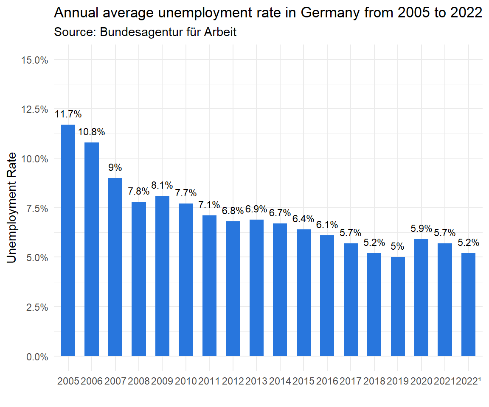
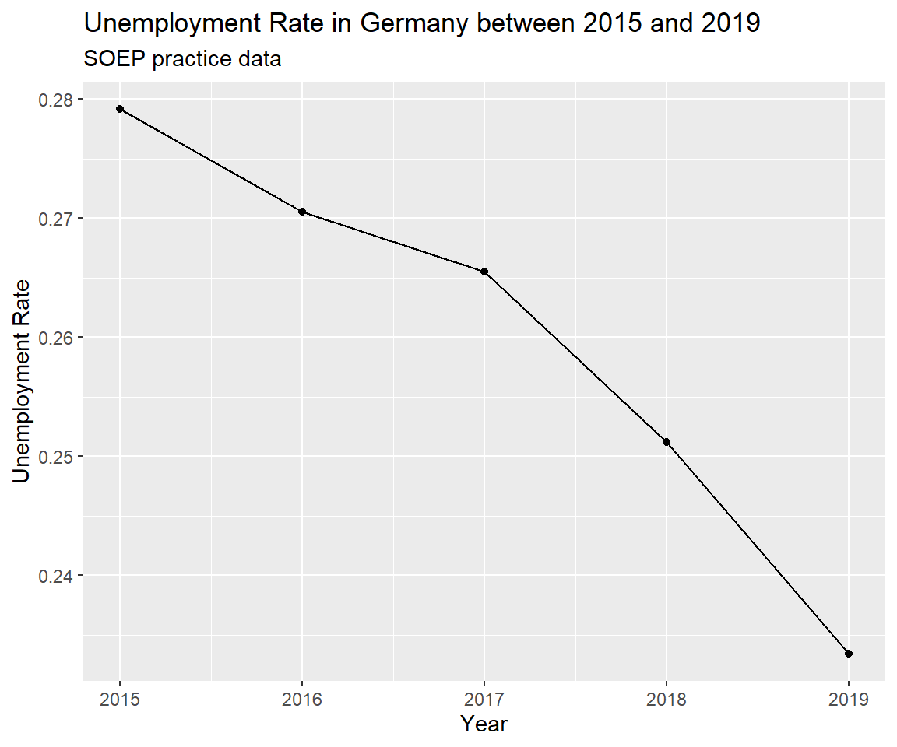
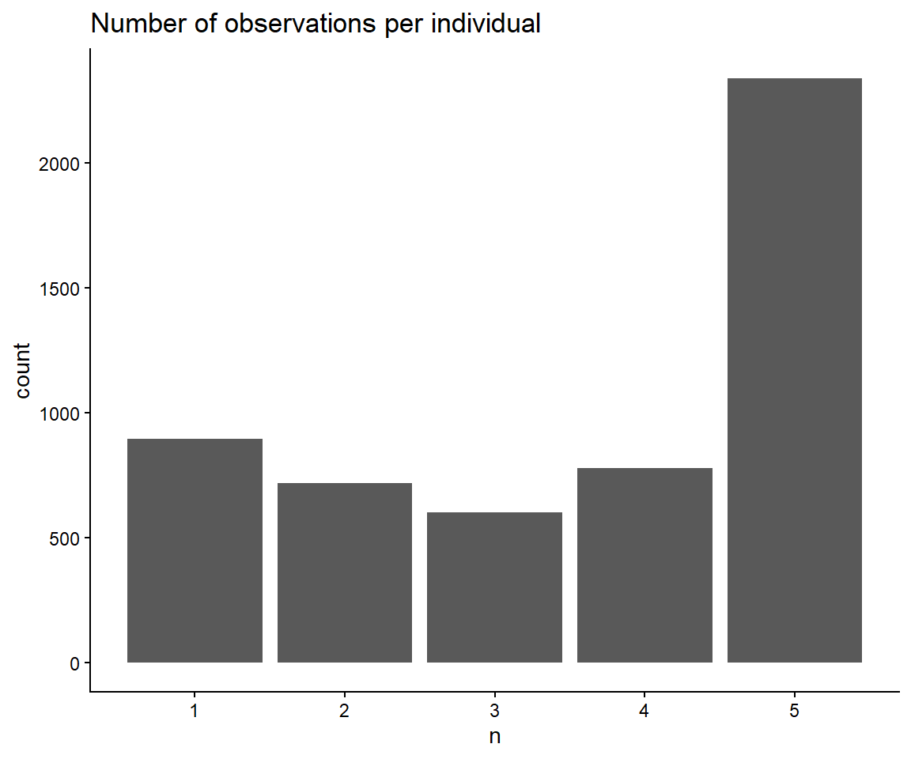

2.2 Panel Data
2.2.1 Unemployment
Unemployment occurs when someone is willing and able to work but does not have a paid job. Unemployment is measured by the unemployment rate. The unemployment rate is the most commonly used indicator for understanding conditions in the labour market.
The personal and social costs of unemployment include severe financial hardship and poverty, debt, homelessness and housing stress, family tensions and breakdown, boredom, alienation, shame and stigma, increased social isolation, crime, erosion of confidence and self-esteem, the atrophying of work skills and ill-health.
2.2.1.1 On decline in Germany

Figure 2.1: Unemployment rate in Germany
Reading
How Low Can Unemployment Really Go? Economists Have No Idea "Here are two things most economists can agree upon: They want an economy where everyone who seeks a job can get one. Yet for the economy to be dynamic, some people will always be unemployed, at least temporarily as they move between jobs."
Life after college.
Panel data allows to analyse the level of unemployment in Germany as well as the changes and trajectories of individuals. We can separate a frictional unemployment component and a permanent unemployment share. Frictional unemployment is a form of unemployment reflecting the gap between someone voluntarily leaving a job and finding another. As such, it is sometimes called search unemployment. Is search unemployment acceptable? Is it different from long-term unemployment? What do you think.
2.2.1.2 Measurement
The unemployment rate represents the proportion of the civilian labour force that is unemployed. Consequently, measuring the unemployment rate requires identifying who is in the labour force. The labour force consists of all employed and unemployed persons of working age. What exactly is defined as employment? Employment status can be defined via a threshold of working hours or income. Who is in the working age?
Reading
In Australia, the Australian Bureau of Statistics (ABS) conducts a survey each month – called the Labour Force Survey – in which it asks around 50,000 people. As part of this survey, the ABS groups people aged 15 years and over (the working-age population) into three broad categories:
- Employed – includes people who are in a paid job for one hour or more in a week.
- Unemployed – people who are not in a paid job, but who are actively looking for work.
- Not in the labour force – people not in a paid job, and who are not looking for work.
Read More: Unemployment: Its Measurement and Types
2.2.2 Application
2.2.2.1 Data Inspection
SOEP practice data (2015 - 2019) comes labelled and ready for analysis. SOEP provides a digital object identifier (DOI) for this data: https://doi.org/10.5684/soep.practice.v36.24
soep <- read_dta("https://github.com/MarcoKuehne/marcokuehne.github.io/blob/main/data/SOEP/practice_en/practice_dataset_eng.dta?raw=true")This practice data contains socio-economic information on children, education, job, health, satisfaction and income. It contains 15 variables and 23522 observations.
| Unique | Missing Pct. | Mean | SD | Min | Median | Max | Histogram | |
|---|---|---|---|---|---|---|---|---|
| syear | 5 | 0 | 2016.8 | 1.4 | 2015.0 | 2017.0 | 2019.0 | ![](data:image/png;base64, iVBORw0KGgoAAAANSUhEUgAABLAAAAGQCAMAAACJa2lsAAAABlBMVEUAAAD///+l2Z/dAAAP40lEQVR4nO3UMQ5k2w1DwfH+N+3sRjTgIfDVj3bVCqQT8M+/AEb8+fUBAP8tgwXMMFjADIMFzDBYwAyDBcwwWMAMgwXMMFjADIMFzDBYwAyDBcwwWMCMvxqsP6V/6njg/4vBAmYYLGCGwQJmGCxghsECZhgsYIbBAmYYLGCGwQJmGCxghsECZhgsYIbBAmYYLGCGwQJmGCxghsECZhgsYIbBAmYYLGCGwQJmGCxghsECZhgsYIbBAmYYLGCGwQJmGCxghsECZhgsYIbBAmYYLGCGwQJmGCxghsECZhgsYIbBetrvRt6D/wEG6zFY8HUG6zFY8HUG6zFY8HUG6zFY8HUG6zFY8HUG6zFY8HUG6zFY8HUG6zFY8HUG6zFY8HUG6zFY8HUG6zFY8HUG6zFY8HUG6zFY8HUG6zFY8HUG6zFY8HUG6zFY8HUG6zFYiSh8icF62u9G3iuJwpcYrKf9buS9kih8icF62u9G3iuJwpcYrKf9buS9kih8icF62u9G3iuJwpcYrKf9buS9kih8icF62u9G3iuJwpcYrKf9buS9kih8icF62u9G3iuJwpcYrKf9buS9kih8icF62u9G3iuJwpcYrKf9buS9kih8icF62u9G3iuJwpcYrKf9buS9kih8icF62u9G3iuJwpcYrKf9buS9kih8icF62u9G3iuJwpcYrKf9buS9kih8icF62u9G3iuJwpcYrKf9buS9kih8icF62u9G3iuJwpcYrKf9buS9kih8icF62u9G3iuJwpcYrKf9buS9kih8icF62u9G3iuJkqjyKwbrab8bea8kSqLKrxisp/1u5L2SKIkqv2Kwnva7kfdKoiSq/IrBetrvRt4riZKo8isG62m/G3mvJEqiyq8YrKf9buS9kiiJKr9isJ72u5H3SqIkqvyKwXra70beK4mSqPIrButpvxt5ryRKosqvGKyn/W7kvZIoiSq/YrCe9ruR90qiJKr8isF62u9G3iuJkqjyKwbrab8bea8kSqLKrxisp/1u5L2SKIkqv2Kwnva7kfdKoiSq/IrBetrvRt4riZKo8isG62m/G3mvJEqiyq8YrKf9buS9kiiJKr9isJ72u5H3SqIkqvyKwXra70beK4mSqPIrButpvxt5ryRKosqvGKyn/W7kvZIoiSq/YrCe9ruR90qiJKr8isF62u9G3iuJkqjyKwbrab8bea8kSqLKrxisp/1u5L2SKIkqv2Kwnva7kfdKoiSq/IrBetrvRt4riZKoErRR/m6DLi76u79/5aT3HFESVYI2isHqnPSeI0qiStBGMVidk95zRElUCdooBqtz0nuOKIkqQRvFYHVOes8RJVElaKMYrM5J7zmiJKoEbRSD1TnpPUeURJWgjWKwOie954iSqBK0UQxW56T3HFESVYI2isHqnPSeI0qiStBGMVidk95zRElUCdooBqtz0nuOKIkqQRvFYHVOes8RJVElaKMYrM5J7zmiJKoEbRSD1TnpPUeURJWgjWKwOie954iSqBK0UQxW56T3HFESVYI2isHqnPSeI0qiStBGMVidk95zRElUCdooBqtz0nuOKIkqQRvFYHVOes8RJVElaKMYrM5J7zmiJKoEbRSD1TnpPUeURJWgjWKwOie954iSqBK0UQxW56T3HFESVYI2isHqnPSeI0qiStBGMVidk95zRElUCdooBqtz0nuOKIkqQRvFYHVOes8RJVElaKMYrM5J7zmiJKoEbRSD1TnpPUeURJWgjWKwOie954iSqBK0UQxW56T3HFESVYI2isHqnPSeI0qiStBGMVidk95zRElUCdooBqtz0nuOKIkqQRvFYHVOes8RJVElaKMYrM5J7zmiJKoEbRSD1TnpPUeURJWgjWKwOie954iSqBK0UQxW56T3HFESVYI2isHqnPSeI0qiStBGMVidk95zRElUCdooBqtz0nuOKIkqQRvFYHVOes8RJVElaKMYrM5J7zmiJKoEbRSD1TnpPUeURJWgjWKwOie954iSqBK0UQxW56T3HFESVYI2isHqnPSeI0qiStBGMVidk95zRElUCdooBqtz0nuOKIkqQRvFYHVOes8RJVElaKMYrM5J7zmiJKoEbRSD1TnpPUeURJWgjWKwOie954iSqBK0UQxW56T3HFESVYI2isHqnPSeI0qiStBGMVidk95zRElUCdooBqtz0nuOKIkqQRvFYHVOes8RJVElaKMYrM5J7zmiJKoEbRSD1TnpPUeURJWgjWKwOie954iSqBK0UQxW56T3HFESVYI2isHqnPSeI0qiStBGMVidk95zRElUCdooBqtz0nuOKIkqQRvFYHVOes8RJVElaKMYrM5J7zmiJKoEbRSD1TnpPUeURJWgjWKwOie954iSqBK0UQxW56T3HFESVYI2isHqnPSeI0qiStBGMVidk95zRElUCdooBqtz0nuOKIkqQRvFYHVOes8RJVElaKMYrM5J7zmiJKoEbRSD1TnpPUeURJWgjWKwOie954iSqBK0UQxW56T3HFESVYI2isHqnPSeI0qiStBGMVidk95zRElUCdooBqtz0nuOKIkqQRvFYHVOes8RJVElaKMYrM5J7zmiJKoEbRSD1TnpPUeURJWgjWKwOie954iSqBK0UQxW56T3HFESVYI2isHqnPSeI0qiStBGMVidk95zRElUCdooBqtz0nuOKIkqQRvFYHVOes8RJVElaKMYrM5J7zmiJKoEbRSD1TnpPUeURJWgjWKwOie954iSqBK0UQxW56T3HFESVYI2isHqnPSeI0qiStBGMVidk95zRElUCdooBqtz0nuOKIkqQRvFYHVOes8RJVElaKMYrM5J7zmiJKoEbRSD1TnpPUeURJWgjWKwOie954iSqBK0UQxW56T3HFESVYI2isHqnPSeI0qiStBGMVidk95zRElUCdooBqtz0nuOKIkqQRvFYHVOes8RJVElaKMYrM5J7zmiJKoEbRSD1TnpPUeURJWgjWKwOie954iSqBK0UQxW56T3HFESVYI2isHqnPSeI0qiStBGMVidk95zRElUCdooBqtz0nuOKIkqQRvFYHVOes8RJVElaKMYrM5J7zmiJKoEbRSD1TnpPUeURJWgjWKwOie954iSqBK0UQxW56T3HFESVYI2isHqnPSeI0qiStBGMVidk95zRElUCdooBqtz0nuOKIkqQRvFYHVOes8RJVElaKMYrM5J7zmiJKoEbRSD1TnpPUeURJWgjWKwOie954iSqBK0UQxW56T3HFESVYI2isHqnPSeI0qiStBGMVidk95zRElUCdooBqtz0nuOKIkqQRvFYHVOes8RJVElaKMYrM5J7zmiJKoEbRSD1TnpPUeURJWgjWKwOie954iSqBK0UQxW56T3HFESVYI2isHqnPSeI0qiStBGMVidk95zRElUCdooBqtz0nuOKIkqQRvFYHVOes8RJVElaKMYrM5J7zmiJKoEbRSD1TnpPUeURJWgjWKwOie954iSqBK0UQxW56T3HFESVYI2isHqnPSeI0qiStBGMVidk95zRElUCdooBqtz0nuOKIkqQRvFYHVOes8RJVElaKMYrM5J7zmiJKoEbRSD1TnpPUeURJWgjWKwOie954iSqBK0UQxW56T3HFESVYI2isHqnPSeI0qiStBGMVidk95zRElUCdooBqtz0nuOKIkqQRvFYHVOes8RJVElaKMYrM5J7zmiJKoEbRSD1TnpPUeURJWgjWKwOie954iSqBK0UQxW56T3HFESVYI2isHqnPSeI0qiStBGMVidk95zRElUCdooBqtz0nuOKIkqQRvFYHVOes8RJVElaKMYrM5J7zmiJKoEbRSD1TnpPUeURJWgjWKwOie954iSqBK0UQxW56T3HFESVYI2isHqnPSeI0qiStBGMVidk95zRElUCdooBqtz0nuOKIkqQRvFYHVOes8RJVElaKMYrM5J7zmiJKoEbRSD1TnpPUeURJWgjWKwOie954iSqBK0UQxW56T3HFESVYI2isHqnPSeI0qiStBGMVidk95zRElUCdooBqtz0nuOKIkqQRvFYHVOes8RJVElaKMYrM5J7zmiJKoEbRSD1TnpPUeURJWgjWKwOie954iSqBK0UQxW56T3HFESVYI2isHqnPSeI0qiStBGMVidk95zRElUCdooBqtz0nuOKIkqQRvFYHVOes8RJVElaKMYrM5J7zmiJKoEbRSD1TnpPUeURJWgjWKwOie954iSqBK0UQxW56T3HFESVYI2isHqnPSeI0qiStBGMVidk95zRElUCdooBqtz0nuOKIkqQRvFYHVOes8RJVElaKMYrM5J7zmiJKoEbRSD1TnpPUeURJWgjWKwOie954iSqBK0UQxW56T3HFESVYI2isHqnPSeI0qiStBGMVidk95zRElUCdooBqtz0nuOKIkqQRvFYHVOes8RJVElaKMYrM5J7zmiJKoEbRSD1TnpPUeURJWgjWKwOie954iSqBK0UQxW56T3HFESVYI2isHqnPSeI0qiStBGMVidk95zRElUCdooBqtz0nuOKIkqQRvFYHVOes8RJVElaKMYrM5J7zmiJKoEbRSD1TnpPUeURJWgjWKwOie954iSqBK0UQxW56T3HFESVYI2isHqnPSeI0qiStBGMVidk95zRElUCdooBqtz0nuOKIkqQRvFYHVOes8RJVElaKMYrM5J7zmiJKoEbRSD1TnpPUeURJWgjWKwOie954iSqBK0UQxW56T3HFESVYI2isHqnPSeI0qiStBGMVidk95zRElUCdooBqtz0nuOKIkqQRvFYHVOes8RJVElaKMYrM5J7zmiJKoEbRSD1TnpPUeURJWgjWKwOie954iSqBK0UQxW56T3HFESVYI2isHqnPSeI0qiStBGMVidk95zRElUCdooBqtz0nuOKIkqQRvFYHVOes8RJVElaKMYrM5J7zmiJKoEbRSD1TnpPUeURJWgjWKwOie954iSqBK0UQxW56T3HFESVYI2isHqnPSeI0qiStBGMVidk95zRElUCdooBqtz0nuOKIkqQRvFYHVOes8RJVElaKMYrM5J7zmiJKoEbRSD1TnpPUeURJWgjWKwOie954iSqBK0UQxW56T3HFESVYI2isHqnPSeI0qiStBGMVidk95zRElUCdooBqtz0nuOKIkqQRvFYHVOes8RJVElaKMYrM5J7zmiJKoEbRSD1TnpPUeURJWgjWKwOie954iSqBK0UQxW56T3HFESVYI2isHqnPSeI0qiStBGMVidk95zRElUCdooBqtz0nuOKIkqQRvFYHVOes8RJVElaKMYrM5J7zmiJKoEbRSD1TnpPUeURJWgjfK9wQL4T/6xwQL4JYMFzDBYwAyDBcwwWMAMgwXMMFjADIMFzDBYwAyDBcwwWMAMgwXMMFjADIMFzPg3vZfzbkfRduIAAAAASUVORK5CYII=) |
| sex | 2 | 0 | 0.5 | 0.5 | 0.0 | 1.0 | 1.0 | ![](data:image/png;base64, iVBORw0KGgoAAAANSUhEUgAABLAAAAGQCAMAAACJa2lsAAAABlBMVEUAAAD///+l2Z/dAAAFQElEQVR4nO3UwRFAQAAEwZN/0iJQhXIYuhPYfc1YACLG0wcA9hIsIEOwgAzBAjIEC8gQLCBDsIAMwQIyBAvIECwgQ7CADMECMgQLyBAs4ArjrEMjs94DvyJYQIZgARmCBWQIFpAhWECGYAEZggVkCBaQIVhAhmABGYIFZAgWkCFYQIZgARmCBWQIFpAhWECGYAEZggVkCBaQIVhAhmABGYIFZAgWkCFYQIZgARmCBWQIFpAhWECGYAEZggVkCBaQIVhAhmABGYIFZAgWkCFYQIZgARmCBWQIFpAhWECGYAEZggVkCBaQIVhAhmABGYIFZAgWkCFYQIZgARmCBWQIFpAhWECGYAEZggVkCBaQ8b5g3XEISBIsIEOwgAzBAjIEC8gQLCBDsIAMwQIyBAvIECwgQ7CADMECMgQLyBAsIEOwgAzBAjIEC8gQLCBDsIAMwQIyBAvIECwgQ7CADMECMgQLyBAsIEOwgAzBAjIEC8gQLCBDsIAMwQIyBAvIECwgQ7CADMECMgQLyBAsIEOwgAzBAjIEC8gQLCBDsIAMwQIyBAvIECwgQ7CADMECMgQLyBAsIEOwgAzBAjIEC8gQLCBDsIAMwQIyBAvIECwgQ7CADMECMgQLyBAsIEOwgAzBAjIEC8gQLCBDsIAMwQIyBAvIECwgQ7CADMECMgQLyBAsIEOwgAzBAjIEC8gQLCBDsIAMwQIyBAvIECwgQ7CADMECMgQLyBAsIEOwgAzBAjIEC8gQLCBDsIAMwQIyBAvIECwgQ7CADMECMgQLyBAsIEOwgAzBAjIEC8gQLCBDsIAMwQIyBAvIECwgQ7CADMECMgQLyBAsIEOwgAzBAjIEC8gQLCBDsIAMwQIyBAvIECwgQ7CADMECMgQLyBAsIEOwgAzBAjIEC8gQLCBDsIAMwQIyBAvIECwgQ7CADMECMgQLyBAsIEOwgAzBAjIEC8gQLCBDsIAMwQIyBAvIECwgQ7CADMECMgQLyBAsIEOwgAzBAjIEC8gQLCBDsIAMwQIyBAvIECwgQ7CADMECMgQLyBAsIEOwgAzBAjIEC8gQLCBDsIAMwQIyBAvIECwgQ7CADMECMgQLyBAsIEOwgAzBAjIEC8gQLCBDsIAMwQIyBAvIECwgQ7CADMECMgQLyBAsIEOwgAzBAjIEC8gQLCBDsIAMwQIyBAvIECwgQ7CADMECMgQLyBAsIEOwgAzBAjIEC8gQLCBDsIAMwQIyBAvIECwgQ7CADMECMgQLyBAsIEOwgAzBAjIEC8gQLCBDsIAMwQIyBAvIECwgQ7CADMECMgQLyBAsIEOwgAzBAjIEC8gQLCBDsIAMwQIyBAvIECwgQ7CADMECMgQLyBAsIEOwgAzBAjIEC8gQLCBDsIAMwQIyBAvIECwgQ7CADMECMgQLyBAsIEOwgAzBAjIEC8gQLCBDsIAMwQIyBAvIECwgQ7CADMECMgQLyBAsIEOwgAzBAjIEC8gQLCBDsIAMwQIyBAvIECwgQ7CADMECMgQLyBAsIEOwgAzBAjIEC8gQLCBDsIAMwQIyBAvIECwgQ7CADMECMgQLyBAsIEOwgAzBAjIEC8gQLCBDsIAMwQIyBAvIECwgQ7CADMECMgQLyBAsIEOwgAzBAjIEC8gQLCBDsIAMwQIyBAvIECwgQ7CADMECMgQLyBAsIEOwgAzBAjIEC8gQLCBDsIAMwQIyBAvIECwgQ7CADMECMgQLyPhOsAC2TAsWwJMEC8gQLCBDsIAMwQIyBAvIECwgQ7CADMECMgQLyBAsIEOwgAzBAjIEC8hYATqMt/Bbh8KRAAAAAElFTkSuQmCC) |
| alter | 86 | 0 | 48.3 | 18.3 | 17.0 | 48.0 | 102.0 | ![](data:image/png;base64, iVBORw0KGgoAAAANSUhEUgAABLAAAAGQCAMAAACJa2lsAAAABlBMVEUAAAD///+l2Z/dAAALMElEQVR4nO3UQRLsNpJEQc39Lz0bLOob2owtCtGRhNzXtSgDM95f/wfwEX+1/wDAf0uwgM8QLOAzBAv4DMECPkOwgM8QLOAzBAv4DMECPkOwgM8QLOAzBAv4DMECPkOwRvvrn2n/fTjMTY8mWPDLTY8mWPDLTY8mWPDLTY8mWPDLTY8mWPDLTY/2D4Mld1zGVY4mWPDLVY4mWPDLVY4mWPDLVY4mWPDLVY4mWPDLVY4mWPDLVY4mWPDLVY4mWPDLVY4mWPDLVY4mWPDLVY4mWPDLVY4mWPDLVY4mWPDLVY4mWPDLVY4mWPDLVY4mWPDLVY4mWPDLVY4mWPDLVY4mWPDLVY4mWPDLVY4mWPDLVY4mWPDLVaZVm/OPtF8ONq4yrZ2d99ovBxtXmdbOznvtl4ONq0xrZ+e99svBxlWmtbPzXvvlYOMq09rZea/9crBxlWnt7LzXfjnYuMq0dnbea78cbFxlWjs777VfDjauMq2dnffaLwcbV5nWzs577ZeDjatMa2fnvfbLwcZVprWz81775WDjKtPa2Xmv/XKwcZVp7ey813452LjKtHZ23mu/HGxcZVo7O++1Xw42rjKtnZ332i8HG1eZ1s7Oe+2Xg42rTGtn5732y8HGVaa1s/Ne++Vg4yrT2tl5r/1ysHGVae3svNd+Odi4yrR2dt5rvxxsXGVaOzvvtV8ONq4yrZ2d99ovBxtXmdbOznvtl4ONq0xrZ+e99svBxlWmtbPzXvvlYOMq09rZea/9crBxlWnt7LzXfjnYuMq0dnbea78cbFxlWjs777VfDjauMq2dnffaLwcbV5nWzs577ZeDjat81g5HS/vdYeMqn7XD0dJ+d9i4ymftcLS03x02rvJZOxwt7XeHjat81g5HS/vdYeMqn7XD0dJ+d9i4ymftcLS03x02rvJZOxwt7XeHjat81g5HS/vdYeMqn7XD0dJ+d9i4ymftcLS03x02rvJZOxwt7XeHjat81g5HS/vdYeMqn7XD0dJ+d9i4ymftcLS03x02rvJZOxwt7XeHjat81g5HS/vdYeMqn7XD0dJ+d9i4ymftcLS03x02rvJZOxwt7XeHjat81g5HS/vdYeMqn7XD0dJ+d9i4ymftcLS03x02rvJZOxwt7XeHjat81g5HS/vdYeMqn7XD0dJ+d9i4ymftcLS03x02rvJZOxwt7XeHjat81g5HS/vdYeMqn7XD0dJ+d9i4ymftcLS03x02rvJZOxwt7XeHjat81g7HJ7U/GndyWM/a2/+k9kfjTg7rWXv7n9T+aNzJYT1rb/+T2h+NO/2tw/qX3vCRAf/btD8ad/p3BOvIBPk7eh+bmwkWEb2Pzc0Ei4jex+ZmgkVE72NzM8EiovexuZlgEdH72NxMsIjofWxuJlhE9D42NxMsInofm5sJFhG9j83NBIuI3sfmZoJFRO9jczPBIqL3sbmZYBHR+9jcTLCI6H1sbiZYRPQ+NjcTLCJ6H5ubCRYRvY/NzQSLiN7H5maCRUTvY3MzwSKi97G5mWAR0fvY3EywiOh9bG4mWET0PjY3Eywieh+bmwkWEb2Pzc0Ei4jex+ZmgkVE72NzM8EiovexuZlgEdH72NxMsIjofWxuJlhE9D42NxMsBuqdCrMJFgP1ToXZBIuBeqfCbILFQL1TYTbBYqDeqTCbYDFQ71SYTbAYqHcqzCZYDNQ7FWYTLAbqnQqzCRYD9U6F2QSLgXqnwmyCxUC9U2E2wWKg3qkwm2AxUO9UmE2wGKh3KswmWAzUOxVmEywG6p0KswkWA/VOhdkEi4F6p8JsgsV1eodG2v8yWL0jbP5x/uf+0a0w2meCBf+t1FjoEyyukxoLfYLFdVJjoU+wuE5qLPQJFtdJjYU+weI6qbHQJ1hcJzUW+gSL66TGQp9gcZ3UWOgTLK6TGgt9gsV1UmOhT7C4Tmos9AkW10mNhT7B4jqpsdAnWFwnNRb6BIvrpMZCn2BxndRY6BMsrpMaC32CxXVSY6FPsLhOaiz0CRbXSY2FPsHiOqmx0CdYXCc1FvoEC/6QmhonCBb8ITU1ThAs+ENqapwgWPCH1NQ4QbDgD6mpcYJgwR9SU+MEwYI/pKbGCYIFf0hNjRMEC/6QmhonCBb8ITU1ThAsOCe1UxbBgnNSO2URLDgntVMWwYJzUjtlESw4J7VTFsGCc1I7ZREsOCe1UxbBgnNSO2URLDgntVMWwYJzUjtlESw4J7VTFsGCc1I7ZREsOCe1UxbBgnNSO2URLDgntVMWwYJzUjtlESw4J7VTFsGCc1I7ZREsOCe1UxbBgnNSO2URLDgntVMWwYJzUjtlESw4J7VTFsGCc1I7ZREsOCe1UxbBgnNSO2URLDgntVMWwYJzUjtlESw4J7VTFsGCc1I7ZREsOCe1UxbBgnNSO2URLDgntVMWwYJzUjtlESw4J7VTFsGCc1I7ZREsOCe1UxbBgnNSO2URLDgntVMWwYJzUjtlESw4J7VTFsGCc1I7ZREsOCe1UxbBgnNSO2URLDgntVMWwYJzUjtlESw4J7VTFsGCc1I7ZREsOCe1UxbBgnNSO2URLDgntVMWwYJzUjtlESw4J7VTFsGCc1I7ZREsOCe1UxbBgnNSO2URLDgntVMWwYJzUjtlESw4J7VTFsGCc1I7ZREsOCe1UxbBgnNSO2URLDgntVMWwYJzUjtlESw4J7VTFsGCc1I7ZREsOCe1UxbBgnNSO2URLDgntVMWwYJzUjtlESw4J7VTFsGCc1I7ZREsOCe1UxbBgnNSO2URLDgntVMWwYJzUjtlESw4J7VTFsGCc1I7ZREsOCe1UxbBgnNSO2URLDgntVMWwYJzUjtlESw4J7VTFsGCc1I7ZREsOCe1UxbBgnNSO2URLDgntVMWwYJzUjtlESw4J7VTFsGCc1I7ZREsOCe1UxbBgnNSO2URLDgntVMWwYJzUjtlESw4J7VTFsGCc1I7ZREsOCe1UxbBgnNSO2URLDgntVMWwYJzUjtlESw4J7VTFsGCKVIrv4hgwRSplV9EsGCK1MovIlgwRWrlFxEsmCK18osIFkyRWvlFBAumSK38IoIFU6RWfhHBgilSK7+IYMEUqZVfRLBgitTKLyJYMEVq5RcRLJgitfKLCBZMkVr5RQQLpkit/CKCBVOkVn4RwYIpUiu/iGDBFKmVX0SwYIrUyi8iWDBFauUXESyYIrXyiwgWTJFa+UUEC6ZIrfwiggVTpFZ+EcGCKVIrv4hgwRSplV9EsGCK1MovIlgwRWrlFxEsmCK18osIFkyRWvlFBAumSK38IoIFU6RWfhHBgilSK7+IYMEUqZVfRLBgitTKLyJYMEVq5RcRLJgitfKLCBZMkVr5RQQLpkit/CKCBVOkVn4RwYIpUiu/iGDBFKmVX0SwYIrUyi8iWDBFauUXESyYIrXyiwgWTJFa+UUEC6ZIrfwiggVTpFZ+EcGCKVIrv4hgwR1SjRhFsOAOqUaMIlhwh1QjRhEsuEOqEaMIFtwh1YhRBAvukGrEKIIFd0g1YhTBgjukGjGKYMEdUo0YRbDgDqlGjCJYcIdUI0YRLLhDqhGjCBbcIdWIUQQL7pBqxCiCBXdINWIUwYI7pBoximDBHVKNGEWw4A6pRowiWHCHVCNGESy4Q6oRowgW3CHViFEEC+6QasQoggV3SDViFMECPpM7wQIEC/iQVGEOEyxAsIAPSRXmMMECBAv4kFRhDhMsQLCAf4tUnv5Dg/7WjwE2qTz9hwb9rR8DHCZYwGfEggXQJFjAZwgW8BmCBXyGYAGfIVjAZwgW8BmCBXyGYAGfIVjAZwgW8BmCBXyGYAGfIVjAZ/w/xe/okdoyUBUAAAAASUVORK5CYII=) |
| anz_pers | 13 | 0 | 2.9 | 1.5 | 1.0 | 2.0 | 13.0 | ![](data:image/png;base64, iVBORw0KGgoAAAANSUhEUgAABLAAAAGQCAMAAACJa2lsAAAABlBMVEUAAAD///+l2Z/dAAAHAElEQVR4nO3UwREstxUEQcp/p3Vd4SQG1PooTqYFmOg39de/ACL++tMPAPhvCRaQIVhAhmABGYIFZAgWkCFYQIZgARmCBWQIFpAhWECGYAEZggVk/K1g/TW1+kTgn0KwgAzBAjIEC8gQLCBDsIAMwQIyBAvIECwgQ7CADMECMgQLyBAsIEOwgAzBAjIEC8gQLCBDsIAMwQIyBAvIECwgQ7CADMECMgQLyBAsIEOwgAzBAjIEC8gQLCBDsIAMwQIyBAvIECwgQ7CADMECMgQLyBAsIEOwgAzBAjIEC8gQLCBDsIAMwQIyBAvIECwgQ7CADMECMgQLyBAsIEOwgAzBAjIEC8gQLCBDsIAMwQIyBAvIECwgQ7CADMECMgQLyBAsIEOwgAzBAjIEC8gQLCBDsIAMwQIyBAvIECwgQ7CADMECMgQLyBAsIEOwgAzBAjIEC8gQLCBDsIAMwQIyBAvIECwgQ7CADMECMgQLyBAsIEOwgAzBAjIEC8gQLCBDsIAMwQIyBAvIECwgQ7CADMECMgQLyBAsIEOwgAzBAjIEC8gQLCBDsIAMwQIyBAvIECwgQ7CADMECMgQLyBAsIEOwgAzBAjIEC8gQLCBDsIAMwQIyBAvIECwgQ7CADMECMgQLyBAsIEOwgAzBAjIEC8gQLCBDsIAMwQIyBAvIECwgQ7CADMECMgQLyBAsIEOwgAzBAjIEC8gQLCBDsIAMwQIyBAvIECwgQ7CADMECMgQLyBAsIEOwgAzBAjIEC8gQLCBDsIAMwQIyBAvIECwgQ7CADMECMgQLyBAsIEOwgAzBAjIEC8gQLCBDsIAMwQIyBAvIECwgQ7CADMECMgQLyBAsIEOwgAzBAjIEC8gQLCBDsIAMwQIyBAvIECwgQ7CADMECMgQLyBAsIEOwgAzBAjIEC8gQLCBDsIAMwQIyBAvIECwgQ7CADMECMgQLyBAsIEOwgAzBAjIEC8gQLCBDsIAMwQIyBAvIECwgQ7CADMECMgQLyBAsIEOwgAzBAjIEC8gQLCBDsIAMwQIyBAvIECwgQ7CADMECMgQLyBAsIEOwgAzBAjIEC8gQLCBDsIAMwQIyBAvIECwgQ7CADMECMgQLyBAsIEOwgAzBAjIEC8gQLCBDsIAMwQIyvhGs7MOBX4L19MOBX4L19MOBX4L19MOBX4L19MOBX4L19MOBX4L19MOBX4L19MOBX4L19MOBX4L19MOBX4L19MOBXw8FK2u1DXAQrHurbYCDYN1bbQMcBOveahvgIFj3VtsAB8G6t9oGOAjWvdU2wEGw7q22AQ6CdW+1DXAQrHurbYCDYN1bbQMcBOveahvgIFj3VtsAB8G6t9oGOAjWvdU2wEGw7q22AQ6CdW+1DXAQrHurbYCDYN1bbQMcBOveahvgIFj3VtsAB8G6t9oGOAjWvdU2wEGw7q22AQ6CdW+1DXAQrHurbYCDYN1bbQMcBOveahvgIFj3VtsAB8G6t9oGOAjWvdU2wEGw7q22AQ6CdW+1DXAQrHurbYCDYN1bbQMcBOveahvgIFj3VtsAB8G6t9oGOAjWvdU2wEGw7q22AQ6CdW+1DXAQrHurbYCDYN1bbQMcBOveahvgIFj3VtsAB8G6t9oGOAjWvdU2wEGw7q22AQ6CdW+1DXAQrHurbYCDYN1bbQMcBOveahvgIFj3VtsAB8G6t9oGOAjWvdU2wEGw7q22AQ6CdW+1DXAQrLetdockwXrbandIEqy3rXaHJMF622p3SBKst612hyTBettqd0gSrLetdockwXrbandIEqy3rXaHJMF622p3SBKst612hyTBettqd0gSrLetdockwXrbandIEqy3rXaHJMF622p3SBKst612hyTBettqd0gSrLetdockwXrbandIEqy3rXaHJMF622p3SBKst612hyTBettqd0gSrLetdockwXrbandIEqy3rXaHJMF622p3SBKst612hyTBettqd0gSrLetdockwXrbandIEqy3rXaHJMF622p3SBKst612hyTBettqd0gSrLetdockwXrbandIEqy3rXaHJMF622p3SBKst612hyTBettqd0gSrLetdockwXrbandIEqy3rXaHJMF622p3SBKsD1sdFawI1oetjgpWBOvDVkcFK4L1YaujghXB+rDVUcGKYH3Y6qhgRbA+bHVUsCJYH7Y6KlgRrA9bHRWsCNaHrY4KVgTrw1ZHBSuC9WGro4IVwfqw1VHBimB92OqoYEWwPmx1VLAiWEysDpZvEywmVgfLtwkWE6uD5dsEi4nVwfJtggX/YfWr8b8gWPB/s/qNv0Ow4J9h1YinCBbwR82CBfAnCRaQIVhAhmABGYIFZAgWkCFYQIZgARmCBWQIFpAhWECGYAEZggVkCBaQ8W+8gEI1fImbbQAAAABJRU5ErkJggg==) |
| anz_kind | 12 | 0 | 0.7 | 1.1 | 0.0 | 0.0 | 10.0 | ![](data:image/png;base64, iVBORw0KGgoAAAANSUhEUgAABLAAAAGQCAMAAACJa2lsAAAABlBMVEUAAAD///+l2Z/dAAAF/klEQVR4nO3UwXEQQBADQZN/0mRAgReEx9edgPSajx8AER//+wDA7xIsIEOwgAzBAjIEC8gQLCBDsIAMwQIyBAvIECwgQ7CADMECMgQLyPijYH180r86D7xFsIAMwQIyBAvIECwgQ7CADMECMgQLyBAsIEOwgAzBAjIEC8gQLCBDsIAMwQIyBAvIECwgQ7CADMECMgQLyBAsIEOwgAzBAjIEC8gQLCBDsIAMwQIyBAvIECwgQ7CADMECMgQLyBAsIEOwgAzBAjIEC8gQLCBDsIAMwQIyBAvIECwgQ7CADMECMgQLyBAsIEOwgAzBAjIEC8gQLCBDsIAMwQIyBAvIECwgQ7CADMECMgQLyBAsIEOwgAzBAjIEC8gQLCBDsIAMwQIyBAvIECwgQ7CADMECMgQLyBAsIEOwgAzBAjIEC8gQLCBDsIAMwQIyBAvIECwgQ7CADMECMgQLyBAsIEOwgAzBAjIEC8gQLCBDsIAMwQIyBAvIECwgQ7CADMECMgQLyBAsIEOwgAzBAjIEC8gQLCBDsIAMwQIyBAvIECwgQ7CADMECMgQLyBAsIEOwgAzBAjIEC8gQLCBDsIAMwQIyBAvIECwgQ7CADMECMgQLyBAsIEOwgAzBAjIEC8gQLCBDsIAMwQIyBAvIECwgQ7CADMECMgQLyBAsIEOwgAzBAjIEC8gQLCBDsIAMwQIyBAvIECwgQ7CADMECMgQLyBAsIEOwgAzBAjIEC8gQLCBDsIAMwQIyBAvIECwgQ7CADMECMgQLyBAsIEOwgAzBAjIEC8gQLCBDsIAMwQIyBAvIECwgQ7CADMECMgQLyBAsIEOwgAzBAjIEC8gQLCBDsIAMwQIyBAvIECwgQ7CADMECMgQLyBAsIEOwgAzBAjIEC8gQLCBDsIAMwQIyBAvIECwgQ7CADMECMgQLyBAsIEOwgAzBAjIEC8gQLCBDsIAMwQIyBAvIECwgQ7CADMECMgQLyBAsIEOwgAzBAjIEC8gQLCBDsIAMwQIyBAvIECwgQ7CADMECMgQLyBAsIEOwgAzBAjIEC8gQLCBDsIAMwQIyBAvIECwgQ7CADMECMgQLyBAsIEOwgAzBAjIEC8gQLCBDsIAMwQIyBAvIECwgQ7CADMECMgQLyBAsIEOwgAzBAjIEC8gQLCBDsIAMwQIyBAvIECwgQ7CADMECMgQLyBAsIEOwgAzBAjIEC8gQLCBDsIAMwQIyBAvIECwgQ7CADMECMgQLyBAsIEOwgAzBAjIEC8gQLCBDsIAMwQIyBAvIECwgYxIsoQP+BsECMgQLyBAsIEOwgAzBAjIEC8gQLCDjOwZrPAesCNZ5DlgRrPMcsCJY5zlgRbDOc8CKYJ3ngBXBOs8BK4J1ngNWBOs8B6wI1nkOWBGs8xywIljnOWBFsM5zwIpgneeAFcE6zwErgnWeA1YE6zwHrAjWeQ5YEazzHLAiWOc5YEWwznPAimCd54AVwTrPASuCdZ4DVgTrPAesCNZ5DlgRrPMcsCJY5zlgRbDOc8CKYJ3ngBXBOs8BK4J1ngNWBOs8B6wI1nkOWBGs8xywIljnOWBFsM5zwIpgneeAFcE6zwErgnWeA1YE6zwHrAjWeQ5YEazzHLAiWOc5YEWwznPAimCd54AVwTrPASuCdZ4DVgTrPAesCNZ5DlgRrPMcsCJY5zlgRbDOc8CKYJ3ngBXBOs8BK4J1ngNWBOs8B6wI1nkOWBGs2hw8TLBqc/AwwarNwcMEqzYHDxOs2hw8TLBqc/AwwarNwcMEqzYHDxOs2hw8TLBqc/AwwarNwcMEqzYHDxOs2hw8TLBqc/AwwarNwcMEqzYHDxOs2hw8TLBqc/AwwarNwcMEqzYHDxOs2hw8TLBqc/AwwarNwcMEqzYHDxOs2hw8TLBqc/AwwTIHGYJlDjIEyxxkCJY5yBAsc5AhWOYgQ7DMQYZgmftKc/BLgmXuO8wJ5CMEy9x3mPvk3niOsy8dLOD7+2fBAvifBAvIECwgQ7CADMECMgQLyBAsIEOwgAzBAjIEC8gQLCBDsIAMwQIyBAvI+AmneseYbJqzmgAAAABJRU5ErkJggg==) |
| bildung | 17 | 7 | 12.4 | 2.8 | 7.0 | 11.5 | 18.0 | ![](data:image/png;base64, iVBORw0KGgoAAAANSUhEUgAABLAAAAGQCAMAAACJa2lsAAAABlBMVEUAAAD///+l2Z/dAAATpElEQVR4nO3UgRHdSAgEUV/+SV8Grg+100bQLwAtoIE//0nSR/z51wVI0q88WJI+w4Ml6TM8WJI+w4Ml6TM8WJI+w4Ml6TM8WJI+w4Ml6TM8WJI+w4Ml6TM8WJI+w4Ml6TM8WDl/6v51ydJsrkiOB0t6zBXJ8WBJj7kiOR4s6TFXJMeDJT3miuR4sKTHXJEcD5b0mCuS48GSHnNFcjxY0mOuSI4HS3rMFcnxYEmPuSI5HizpMVckx4MlPeaK5HiwpMdckRwPlvSYK5LjwZIec0VyPFjSY65IjgdLeswVyfFgSY+5IjkeLOkxVyTHgyU95orkeLCkx1yRHA+W9JgrkuPBkh5zRXI8WNJjrkiOB0t6zBXJ8WBJj7kiOR4s6TFXJMeDJT3miuR4sKTHXJEcD5b0mCuS48GSHnNFcjxY0mOuSI4HS3rMFcnxYEmPuSI5HizpMVckx4MlPeaK5HiwpMdckRwPlvSYK5LjwZIec0VyPFjSY65IjgdLeswVyfFgSY+5IjkeLOkxVyTHgyU95orkeLCkx1yRHA+W9JgrkuPBkh5zRXI8WNJjrkiOB0t6zBXJ8WBJj7kiOR4s6TFXJMeDJT3miuR4sKTHXJEcD5b0mCuS48GSHnNFcjxY0mOuSI4HS3rMFcnxYEmPuSI5HizpMVckx4MlPeaK5HiwpMdckRwPlvSYK5LjwZIec0VyPFjSY65IjgdLeswVyfFgSY+5IjkeLOkxVyTHgyU95orkeLCkx1yRHORgeRV1ienN8WBJj5neHA+W9JjpzfFgSY+Z3hwPlvSY6c3xYEmPmd4cD5b0mOnN8WBJj5neHA+W9JjpzfFgSY+Z3hwPlvSY6c3xYEmPmd4cD5b0mOnN8WBJj5neHA+W9JjpzfFgSY+Z3hwPlvSY6c3xYEmPmd4cD5b0mOnN8WBJj5neHA+W9JjpzfFgSY+Z3hwPlvSY6c3xYEmPmd4cD5b0mOnN8WBJj5neHA+W9JjpzfFgSY+Z3hwPlvSY6c3xYEmPmd4cD5b0mOnN8WBJj5neHA+W9JjpzfFgSY+Z3hwPlvSY6c3xYEmPmd4cD5b0mOnN8WBJj5neHA+W9JjpzfFgSY+Z3hwPlvSY6c3xYEmPmd6cqQcLqUtKMIo5yGF4fpse1SUlGMUc5DA8v02P6pISjGIOchie36ZHdemocLqMYg5yGBqPIHXpqHC6jGIOchgajyB16ahwuoxiDnIYGo8gdemocLqMYg5yGBqPIHXpqHC6jGIOchgajyB16ahwuoxiDnIYGo8gdemocLqMYg5yGBqPIHXpqHC6jGIOchgajyB16ahwuoxiDnIYGo8gdemocLqMYg5yGBqPIHXpqHC6jGIOchgajyB16ahwuoxiDnIYGo8gdemocLqMYg5yGBqPIHXpqHC6jGIOchgajyB16ahwuoxiDnIYGo8gdemocLqMYg5yGBqPIHXpqHC6jGIOchgajyB16ahwuoxiDnIYGo8gdemocLqMYg5yGBqPIHXpqHC6jGIOchgajyB16ahwuoxiDnIYGo8gdemocLqMYg5yGBqPIHXpqHC6jGIOchgajyB16ahwuoxiDnIYGo8gdemocLqMYg5yGBqPIHXpqHC6jGIOchgajyB16ahwuoxiDnIYGo8gdemocLqMYg5yGBqPIHXpqHC6jGIOchgajyB16ahwuoxiDnIYGo8gdemocLqMYg5yGBqPIHXpqHC6jGIOchgajyB16ahwuoxiDnIYGo8gdemocLqMYg5yGBqPIHXpqHC6jGIOchgajyB16ahwuoxiDnIYGo8gdemocLqMYg5yGBqPIHXpqHC6jGIOchgajyB16ahwuoxiDnIYGo8gdemocLqMYg5yGBqPIHXpqHC6jGIOchgajyB16ahwuoxiDnIYGo8gdemocLqMYg5yGBqPIHXpqHC6jGIOchgajyB16ahwujZEceoGImV1mifq0lHhdG2I4tQNRMrqNE/UpaPC6doQxakbiJTVaZ6oS0eF07UhilM3ECmr0zxRl44Kp2tDFKduIFJWp3miLh0VTteGKE7dQKSsTvNEXToqnK4NUZy6gUhZneaJunRUOF0bojh1A5GyOs0TdemocLo2RHHqBiJldZon6tJR4XRtiOLUDUTK6jRP1KWjwunaEMWpG4iU1WmeqEtHhdO1IYpTNxApq9M8UZeOCqdrQxSnbiBSVqd5oi4dFU7XhihO3UCkrE7zRF06KpyuDVGcuoFIWZ3mibp0VDhdG6I4dQORsjrNE3XpqHC6NkRx6gYiZXWaJ+rSUeF0bYji1A1Eyuo0T9Slo8Lp2hDFqRuIlNVpnqhLR4XTtSGKUzcQKavTPFGXjgqna0MUp24gUlaneaIuHRVO14YoTt1ApKxO80RdOiqcrg1RnLqBSFmd5om6dFQ4XRuiOHUDkbI6zRN16ahwujZEceoGImV1mifq0lHhdG2I4tQNRMrqNE/UpaPC6doQxakbiJTVaZ6oS0eF07UhilM3ECmr0zxRl44Kp2tDFKduIFJWp3miLh0VTteGKE7dQKSsTvNEXToqnK4NUZy6gUhZneaJunRUOF0bojh1A5GyOs0TdemocLo2RHHqBiJldZon6tJR4XRtiOLUDUTK6jRP1KWjwunaEMWpG4iU1WmeqEtHhdO1IYpTNxApq9M8UZeOCqdrQxSnbiBSVqd5oi4dFU7XhihO3UCkrE7zRF06KpyuDVGcuoFIWZ3mibp0VDhdG6I4dQORsjrNE3XpqHC6NkRx6gYiZXWaJ+rSUeF0bYji1A1Eyuo0T9Slo8Lp2hDFqRuIlNVpnqhLR4XTtSGKUzcQKavTPFGXjgqna0MUp24gUlaneaIuHRVO14YoTt1ApKxO80RdOiqcrg1RnLqBSFmd5om6dFQ4XRuiOHUDkbI6zRN16ahwujZEceoGImV1mifq0lHhdG2I4tQNRMrqNE/UpaPC6doQxakbiJTVaZ6oS0eF07UhilM3ECmr0zxRl44Kp2tDFKduIFJWp3miLh0VTteGKE7dQKSsTvNEXToqnK4NUZy6gUhZneaJunRUOF0bojh1A5GyOs0TdemocLo2RHHqBiJldZon6tJR4XRtiOLUDUTK6jRP1KWjwunaEMWpG4iU1WmeqEtHhdO1IYpTNxApq9M8UZeOCqdrQxSnbiBSVqd5oi4dFU7XhihO3UCkrE7zRF06KpyuDVGcuoFIWZ3mibp0VDhdG6I4dQORsjrNE3XpqHC6NkRx6gYiZXWaJ+rSUeF0bYji1A1Eyuo0T9Slo8Lp2hDFqRuIlNVpnqhLR4XTtSGKUzcQKavTPFGXjgqna0MUp24gUlaneaIuHRVO14YoTt1ApKxO80RdOiqcrg1RnLqBSFmd5om6dFQ4XRuiOHUDkbI6zRN16ahwujZEceoGImV1mifq0lHhdG2I4tQNRMrqNE/UpaPC6doQxakbiJTVaZ6oS0eF07UhilM3ECmr0zxRl44Kp2tDFKduIFJWp3miLh0VTteGKE7dQKSsTvNEXToqnK4NUZy6gUhZneaJunRUOF0bojh1A5GyOs0TdemocLo2RHHqBiJldZon6tJR4XRtiOLUDUTK6jRP1KWjwunaEMWpG4iU1WmeqEtHhdO1IYpTNxApq9M8UZeOCqdrQxSnbiBSVqd5oi4dFU7XhihO3UCkrE7zRF06KpyuDVGcuoFIWZ3mibp0VDhdG6I4dQORsjrNE3XpqHC6NkRx6gYiZXWaJ+rSUeF0bYji1A1Eyuo0D9SFPKKBwj9+Q0qmLgdSVqd5oC7kEQ0U/vEbUjJ1OZCyOs0DdSGPaKDwj9+QkqnLgZTVaR6oC3lEA4V//IaUTF0OpKxO80BdyCMaKPzjN6Rk6nIgZXWaB+pCHtFA4R+/ISVTlwMpq9M8UBfyiAYK//gNKZm6HEhZneaBupBHNFD4x29IydTlQMrqNA/UhTyigcI/fkNKpi4HUlaneaAu5BENFP7xG1IydTmQsjrNA3Uhj2ig8I/fkJKpy4GU1WkeqAt5RAOFf/yGlExdDqSsTvNAXcgjGij84zekZOpyIGV1mgfqQh7RQOEfvyElU5cDKavTPFAX8ogGCv/4DSmZuhxIWZ3mgbqQRzRQ+MdvSMnU5UDK6jQP1IU8ooHCP35DSqYuB1JWp3mgLuQRDRT+8RtSMnU5kLI6zQN1IY9ooPCP35CSqcuBlNVpHqgLeUQDhX/8hpRMXQ6krE7zQF3IIxoo/OM3pGTqciBldZoH6kIe0UDhH78hJVOXAymr0zxQF/KIBgr/+A0pmbocSFmd5oG6kEc0UPjHb0jJ1OVAyuo0D9SFPKKBwj9+Q0qmLgdSVqd5oC7kEQ0U/vEbUjJ1OZCyOs0DdSGPaKDwj9+QkqnLgZTVaR6oC3lEA4V//IaUTF0OpKxO80BdyCMaKPzjN6Rk6nIgZXWaB+pCHmHs6QQRHteG2TZG5MEK14U8wtjTCSI8rg2zbYzIgxWuC3mEsacTRHhcG2bbGJEHK1wX8ghjTyeI8Lg2zLYxIg9WuC7kEcaeThDhcW2YbWNEHqxwXcgjjD2dIMLj2jDbxog8WOG6kEcYezpBhMe1YbaNEXmwwnUhjzD2dIIIj2vDbBsj8mCF60IeYezpBBEe14bZNkbkwQrXhTzC2NMJIjyuDbNtjMiDFa4LeYSxpxNEeFwbZtsYkQcrXBfyCGNPJ4jwuDbMtjEiD1a4LuQRxp5OEOFxbZhtY0QerHBdyCOMPZ0gwuPaMNvGiDxY4bqQRxh7OkGEx7Vhto0RebDCdSGPMPZ0ggiPa8NsGyNiNhAoa2pdyCOMPZ0gwuPaMNvGiDxY4bqQRxh7OkGEx7Vhto0RTT1YU838J4w9nSDC49ow28aIPFg1M/8JY08niPC4Nsy2MSIPVs3Mf8LY0wkiPK4Ns22MyINVM/OfMPZ0ggiPa8NsGyPyYNXM/CeMPZ0gwuPaMNvGiDxYNTP/CQPpxHH9+vlU3aDGiDxYNTP/CQPpxHH9+vlU3aDGiDxYNTP/CQPpxHH9+vlU3aDGiDxYNTP/CQPpxHH9+vlU3aDGiDxYNTP/CQPpxHH9+vlU3aDGiDxYNTP/CQPpxHH9+vlU3aDGiDxYNTP/CQPpxHH9+vlU3aDGiDxYNTP/CQPpxHH9+vlU3aDGiDxYNTP/CQPpxHH9+vlU3aDGiDxYNTP/CQPpxHH9+vlU3aDGiDxYNTP/CQPpxHH9+vlU3aDGiDxYNTP/CQPpxHH9+vlU3aDGiDxYNTP/CQPpxHH9+vlU3aDGiDxYNTP/CQPpxHH9+vlU3aDGiDxYNTP/CQPpxHH9+vlU3aDGiDxYNTP/CQPpxHH9+vlU3aDGiDxYNTP/CQPpxHH9+vlU3aDGiDxYNTP/CQPpxHH9+vlU3aDGiDxYNTP/CQPpxHH9+vlU3aDGiDxYNTP/yaJbgjyCCHcyte2Kxog8WDUz/8miW4I8ggh3MrXtisaIPFg1M//JoluCPIIIdzK17YrGiDxYNTP/ydifgnRSfwQR7mRq2xWNEXmwamb+k7E/Bemk/ggi3MnUtisaI/Jg1cz8J2N/CtJJ/RFEuJOpbVc0RuTBqpn5T8b+FKST+iOIcCdT265ojMiDVTPzn4z9KUgn9UcQ4U6mtl3RGJEHq2bmPxn7U5BO6o8gwp1MbbuiMSIPVs3MfzL2pyCd1B9BhDuZ2nZFY0QerJqZ/2TsT0E6qT+CCHcyte2Kxog8WDUz/8nYn4J0Un8EEe5katsVjRF5sGpm/pOxPwXppP4IItzJ1LYrGiPyYNXM/CdjfwrSSf0RRLiTqW1XNEbkwaqZ+U/G/hSkk/ojiHAnU9uuaIzIg1Uz85+M/SlIJ/VHEOFOprZd0RiRB6tm5j8Z+1OQTuqPIMKdTG27ojEiD1bNzH8y9qcgndQfQYQ7mdp2RWNEHqyamf9k7E9BOqk/ggh3MrXtisaIPFg1M//J2J+CdFJ/BBHuZGrbFY0RebBqHFdJeVwerJ8/P6iWrkZZbmCN4yopj2vqajWEO/FgBR/Zw3GVlMc1dbUawp14sIKP7OG4SsrjmrpaDeFOPFjBR/ZwXCXlcU1drYZwJx6s4CN7OK6S8rimrlZDuBMPVvCRPRxXSXlcU1erIdyJByv4yB6Oq6Q8rqmr1RDuxIMVfGQPx1VSHtfU1WoId+LBCj6yh+MqKY9r6mo1hDvxYAUf2cNxlZTHNXW1GsKdeLCCj+zhuErK45q6Wg3hTjxYwUf2cFwl5XFNXa2GcCcerOAjeziukvK4pq5WQ7gTD1bwkT0cV0l5XFNXqyHciQcr+MgejqukPK6pq9UQ7sSDFXxkD8dVUh7X1NVqCHfiwQo+sofjKimPa+pqNYQ78WAFH9nDcZWUxzV1tRrCnXiwgo/s4bhKyuOauloN4U48WMFH9nBcJeVxMau14REPVvCRPRxXSXlcK24J8ogHK/jIHo6rpDyuFbcEecSDFXxkD8dVUh7XiluCPOLBCj6yh+MqKY9rxS1BHvFgBR/Zw3GVlMe14pYgj8w7WI1HiLqYsqZyXCXlcY1drXGPeLBGlTWV4yopj2vsao17xIM1qqypHFdJeVxjV2vcIx6sUWVN5bhKyuMau1rjHvFgjSprKsdVUh7X2NUa90j6YEnSX8UOliT9Sx4sSZ/hwZL0GR4sSZ/hwZL0GR4sSZ/hwZL0GR4sSZ/hwZL0GR4sSZ/hwZL0GR4sSZ/hwZL0GR4sSZ/xP8E8vaUncgpAAAAAAElFTkSuQmCC) |
| erwerb | 7 | 0 | 3.0 | 1.8 | 1.0 | 2.0 | 6.0 | ![](data:image/png;base64, iVBORw0KGgoAAAANSUhEUgAABLAAAAGQCAMAAACJa2lsAAAABlBMVEUAAAD///+l2Z/dAAALn0lEQVR4nO3UMRIjRwwDwPP/P+26xEyNgMKI6n7BEjvAn38AvsSf9gcA/F8GC/gaBgv4GgYL+BoGC/gaBgv4GgYL+BoGC/gaBgv4GgYL+BoGC/gaBgv4GgYL+BoGC2J/Pqx97ztEATGD1SIKiBmsFlFAzGC1iAJiBqtFFBAzWC2igJjBahEFxAxWiyggZrBaRAExg9UiCogZrBZRQMxgtYgCYgarRRQQM1gtooCYwWoRBcQMVosoIGawWkQBMYPVIgqIGayWKAq/Cf7ShBaDBTFNaDFYENOEFoMFMU1oMVgQ04QWgwUxTWgxWBDThBaDBTFNaDFYENOEFoMFMU1oMVgQ04QWgwUxTWgxWBDThBaDBTFNaDFYENOEFoMFMU1oMVgQ04QWgwUxTWgxWBDThBaDBTFNaDFYENOEFoMFMU1oMVgQ04QWgwUxTWgxWBDThBaDBTFNaDFYENOEFoMFMU1oMVgQ04QWgwUxTWgxWBDThBaDBTFNaDFYENOEFoMFMU1oMVgQ04QWgwUxTWgxWBDThBaDBTFNaDFYENOEFoMFMU1oMVgQ04QWgwUxTWgxWBDThBaDBTFNaDFYENOEFoMFMU1oMVgQ04QWgwUxTWgxWBDThBaDBTFNaDFYENOEFoMFMU1oMVgQ04QWgwUxTWgxWBDThBaDBTFNaDFYENOEFoMFMU1oMVgQ04QWgwUxTWgxWBDThBaDBTFNaDFYENOEFoMFMU1oMVgQ04QWgwUxTWgxWBDThBaDBTFNaDFYENOEFoMFMU1oMVgQ04QWgwUxTWgxWBDThBaDBTFNaDFYENOEFoMFMU1oMVgQ04QWgwUxTWgxWBDThBaDBTFNaDFYENOEFoMFMU1oMVgQ04QWgwUxTWgxWBDThBaDBTFNaDFYENOEFoMFMU1oMVgQ04QWgwUxTWgxWBDThBaDBTFNaDFYENOEFoMFMU1oMVgQ04QWgwUxTWgxWBDThBaDBTFNaDFYENOEFoMFMU1oMVgQ04QWgwUxTWgxWBDThBaDBTFNaDFYENOEFoMFMU1oMVgQ04QWgwUxTWgxWBDThBaDBTFNaDFYENOEFoMFMU1oMVgQ04QWgwUxTWgxWBDThBaDBTFNaDFYENOEFoMFMU1oMVgQ04QWgwUxTWgxWBDThBaDBTFNaDFYENOEFoMFMU1oMVgQ04QWgwUxTWgxWBDThBaDBTFNaDFYENOEFoMFMU1oMVgQ04QWgwUxTWgxWBDThBaDBTFNaDFYENOEFoMFMU1oMVgQ04QWgwUxTWgxWBDThBaDBTFNaDFYENOEFoMFMU1oMVgQ04QWgwUxTWgxWBDThBaDBTFNaDFYENOEFoMFMU1oMVgQ04QWgwUxTWgxWBDThBaDBTFNaDFYENOEFoMFMU1oMVgQ04QWgwUxTWgxWBDThBaDBTFNaDFYENOEFoMFMU1oMVgQ04QWgwUxTWgxWBDThBaDBTFNaDFYENOEFoMFMU1oMVgQ04QWgwUxTWgxWBDThBaDBTFNaDFYENOEFoMFMU1oMVgQ04QWgwUxTWgxWBDThBaDBTFNaDFYENOEFoMFMU1oMVgQ04QWgwUxTWgxWBDThBaDBTFNaDFYENOEFoMFMU1oMVgQ04QWgwUxTWgxWBDThBaDBTFNaDFYENOEFoMFMU1oMVgQ04QWgwUxTWgxWBDThBaDBTFNaDFYENOEFoMFMU1oMVgQ04QWgwUxTWgxWBDThBaDBTFNaDFYENOEFoMFMU1oMVgQ04QWgwUxTWgxWBDThBaDBTFNaDFYENOEFoMFMU1oMVgQ04QWgwUxTWgxWBDThJanB+vDtjLmHE+zxWCNrYw5x9NsMVhjK2PO8TRbDNbYyphzPM0WgzW2MuYcT7PFYI2tjDnH02wxWGMrY87xNFsM1tjKmHM8zRaDNbYy5hxPs8Vgja2MOcfTbDFYYytjzvE0WwzW2MqYczzNFoM1tjLmHE+zxWCNrYw5x9NsMVhjK2PO8TRbDNbYyphzPM0WgzW2MuYcT7PFYI2tjDnH02wxWGMrY87xNFsM1tjKmHM8zRaDNbYy5hxPs8Vgja2MOcfTbDFYYytjzvE0WwzW2MqYczzNFoM1tjLmHE+zxWCNrYw5x9NsMVhjK2PO8TRbDNbYyphzPM0WgzW2MuYcT7PFYI2tjDnH02wxWGMrY87xNFsM1tjKmHM8zRaDNbYy5hxPs8Vgja2MOcfTbDFYYytjzvE0WwzW2MqYczzNFoM1tjLmHE+zxWCNrYw5x9NsMVhjK2PO8TRbDNbYyphzPM0WgzW2MuYcT7PFYI2tjDnH02wxWGMrY87xNFsM1tjKmHM8zRaDNbYy5hxPs8Vgja2MOcfTbDFYYytjzvE0WwzW2MqYczzNFoM1tjLmHE+zxWCNrYw5x9NsMVhjK2PO8TRbDNbYyphzPM0WgzW2MuYcT7PFYI2tjDnH02wxWGMrY87xNFsM1tjKmHM8zRaDNbYy5hxPs8Vgja2MOcfTbDFYYytjzvE0WwzW2MqYczzNFoM1tjLmHE+zxWCNrYw5x9NsMVhjK2PO8TRbDNbYyphzPM0WgzW2MuYcT7PFYI2tjDnH02wxWGMrY87xNFsM1tjKmHM8zRaDNbYy5hxPs8Vgja2MOcfTbDFYYytjzvE0WwzW2MqYczzNFoM1tjLmHE+zxWCNrYw5x9NsMVhjK2PO8TRbDNbYyphzPM0WgzW2MuYcT7PFYI2tjDnH02wxWGMrY87xNFsM1tjKmHM8zRaDNbYy5hxPs8Vgja2MOcfTbDFYYyvjX3T8592+7mUGa2xl/IuO/7zb173MYI2tjH/R8Z93+7qXGayxlfEvOv7zbl/3MoM1tjL+Rcd/3u3rXmawxlbGv+j4z7t93csM1tjK+Bcd/3m3r3uZwRpbGf+i4z/v9nUvM1hjK+NfdPzn3b7uZQZrbGX8i47/vNvXvcxgja2Mf9Hxn3f7upcZrLGV8S86/vNuX/cygzW2Mv5Fx3/e7eteZrDGVsa/6PjPu33dywzW2Mr4Fx3/ebeve5nBGlsZ/6LjP+/2dS8zWGMr4190/Ofdvu5lBmtsZfyLjv+829e9zGCNrYx/0fGfd/u6lxmssZXxLzr+825f9zKDNbYy/kXHf97t615msMZWxr/o+M+7fd3LDNbYyvgXHf95t697mcEaWxn/ouM/7/Z1LzNYYyvjX3T8592+7mUGa2xl/IuO/7zb173MYI2tjH/R8Z93+7qXGayxlfEvOv7zbl/3MoM1tjL+Rcd/3u3rXmawxlbGv+j4z7t93csM1tjK+Bcd/3m3r3uZwRpbGb8R5u3rjp/32eteZrDGVsZvhHn7uuPnffa6lxmssZXxG2Hevu74eZ+97mUGa2xl/EaYt687ft5nr3uZwRpbGb8R5u3rjp/32eteZrDGVsZvhHn7uuPnffa6lxmssZXxG2Hevu74eZ+97mUGa2xl/EaYt687ft5nr3uZwRpbGb8R5u3rjp/32eteZrDGVsZvhHn7uuPnffa6lxmssZXxG2Hevu74eZ+97mUGa2xl/EaYt687ft5nr3uZwRpbGb8R5u3rjp/32eteZrDGVsZvhHn7uuPnffa6lxmssZXxG2Hevu74eZ+97mUGa2xl/EaYt687ft5nr3uZwRpbGb8R5u3rjp/32eteZrDGVsZvhHn7uuPnffa6lxmssZXxG2Hevu74eZ+97mUGa2xl/EaYt687ft5nr3uZwRpbGb8R5u3rjp/32eteZrDGVsZvhHn7uuPnffa6lxmssZXxG2Hevu74eZ+97mUGa2xl/EaYt687ft5nr3uZwRpbGb8R5u3rjp/32eteZrDGVsZvhHn7uuPnffa6lxmssZXxG2Hevu74eZ+97mUGa2xl/EaYt687fp7r/vu2lw8B7lsbLIAmgwV8DYMFfA2DBXwNgwV8DYMFfA2DBXwNgwV8DYMFfA2DBXwNgwV8DYMFfA2DBXwNgwV8jX8BeyuuxmSrgvEAAAAASUVORK5CYII=) |
| branche | 84 | 42 | 60.5 | 25.3 | 1.0 | 64.0 | 99.0 | ![](data:image/png;base64, iVBORw0KGgoAAAANSUhEUgAABLAAAAGQCAMAAACJa2lsAAAABlBMVEUAAAD///+l2Z/dAAARK0lEQVR4nO3UwRHtRg5DUU/+SU/1htUL+ZVF0xSAf08CAhsU//ofAJj46+sAAPBPcbAA2OBgAbDBwQJgg4MFwAYHC4ANDhYAGxwsADY4WABscLAA2OBgAbDBwQJgg4MFwAYHC1D3V9PXuf8DiTMBWThYJXEmIAsHqyTOBGThYJXEmYAsHKySOBOQhYNVEmcCsnCwSuJMQBYOVkmcCcjCwSqJMwFZOFglcSYgCwerJM4EZOFglcSZgCwcrJI4E5CFg1USZwKycLBK4kxAFg5WSZwJyMLBKokzAVk4WCVxJiALB6skzgRk4WCVxJmALByskjgTkIWDVRJnArJwsEriTEAWDlZJnAnIwsEqiTMBWThYJXEmIAsHqyTOBGThYJXEmYAsHKySOBOQhYNVEmcCsnCwSuJMQBYOVkmcCcjCwSqJMwFZOFglcSYgCwerJM4EZOFglcSZgCwcrJI4E5CFg1USZwKycLBK4kxAFg5WSZwJyMLBKokzAVk4WCVxJiALB6skzgRk4WCVxJmALByskjgTkIWDVRJnArJwsEriTEAWDlZJnAnIwsEqiTMBWThYJXEmIAsHqyTOBGThYJXEmYAsHKySOBOQhYNVEmcCsnCwSuJMQBYOVkmcCcjCwSqJMwFZugcr8NApZwNwcLCKcjYABwerKGcDcHCwinI2AAcHqyhnA3BwsIpyNgAHB6soZwNwcLCKcjYABwerKGcDcHCwinI2AAcHqyhnA3BwsIpyNgAHB6soZwNwcLCKcjYABwerKGcDcHCwinI2AAcHqyhnA3BwsIpyNgAHB6soZwNwcLCKcjYABwerKGcDcHCwinI2AAcHqyhnA3BwsIpyNgAHB6soZwNwcLCKcjYABwerKGcDcHCwinI2AAcHqyhnA3BwsIpyNgAHB6soZwNwcLCKcjYABwerKGcDcHCwinI2AAcHqyhnA3BwsIpyNgAHB6soZwNwcLCKcjYABwerKGcDcHCwinI2AAcHqyhnA3BwsIpyNgAHB6soZwNwcLCKcjYABwerKGcDcHCwinI2AAcHqyhnA3BwsIpyNgAHB6soZwNwcLCKcjYABwerKGcDcHCwinI2AAcHqyhnA3BwsIpyNgAHB6soZwNwcLCKcjYABwerKGcDcHCwinI2AAcHqyhnA3BwsIpyNgAHB6soZwNwcLCKcjYABwerKGcDcHCwinI2AAcHqyhnA3BwsIpyNgAHB6soZwNwcLCKcjYABwerKGcDcHCwinI2AAcHqyhnA3BwsIpyNgAHB6soZwNwcLCKcjYABwerKGcDcHCwinI2AAcHqyhnA3BwsIpyNgAHB6soZwNwcLCKcjYABwerKGcDcHCwinI2CAjceT+Tx8i8POVsEBC4834mj5F5ecrZICBw5/1MHiPz8pSzQUDgzvuZPEbm5Slng4DAnfczeYzMy1POBgGBO+9n8hiZl6ecDQICd97P5DEyL085GwQE7ryfyWNkXp5yNggI3Hk/k8fIvDzlbBAQuPN+Jo+ReXnK2SAgcOf9TB4j8/KUs0FA4M77mTxG5uUpZ4OAwJ33M3mMzMtTzgYBgTvvZ/IYmZennA0CAnfez+QxMi9PORsEBO68n8ljZF6ecjYICNx5P5PHyLw85WwQELjzfiaPkXl5ytkgIHDn/UweI/PylLNBQODO+5k8RublKWeDgMCd9zN5jMzLU84GAYE772fyGJmXp5wNAgJ33s/kMTIvTzkbBATuvJ/JY2RennI2CAjceT+Tx8i8POVsEBC4834mj5F5ecrZICBw5/1MHiPz8pSzQUDgzvuZPEbm5Slng4DAnfczeYzMy1POBgGBO+9n8hiZl6ecDQICd97P5DEyL085GwQE7ryfyWNkXp5yNggI3Hk/k8fIvDzlbBAQuPN+Jo+ReXnK2SAgcOf9TB4j8/KUs0FA4M77mTxG5uUpZ4OAwJ33M3mMzMtTzgYBgTvvZ/IYmZennA0CAnfez+QxMi9PORsEBO68n8ljZF6ecjYICNx5P5PHyLw85WwQELjzfiaPkXl5ytkgIHDn/UweI/PylLNBQODO+5k8RublKWeDgMCd9zN5jMzLU84GAYE772fyGJmXp5wNAgJ33s/kMTIvTzkbBATuvJ/JY2RennI2CAjceT+Tx8i8POVsEBC4834mj5F5ecrZICBw5/1MHiPz8pSzQUDgzvuZPEbm5Slng4DAnfczeYzMy1POBgGBO+9n8hiZl6ecDQICd97P5DEyL085GwQE7ryfyWNkXp5yNggI3Hk/k8fIvDzlbBAQuPN+Jo+ReXnK2SAgcOf9TB4j8/KUs0FA4M77mTxG5uUpZ4OAwJ33M3mMzMtTzgYBgTvvZ/IYmZennA0CAnfez+QxMi9PORsEBO68n8ljZF6ecjYTgVtxyZ7ORLeEwPKUs5kI3IpL9nQmuiUElqeczUTgVlyypzPRLSGwPOVsJgK34pI9nYluCYHlKWczEbgVl+zpTHRLCCxPOZuJwK24ZE9noltCYHnK2UwEbsUlezoT3RICy1POZiJwKy7Z05nolhBYnnI2E4FbccmezkS3hMDylLOZCNyKS/Z0JrolBJannM1E4FZcsqcz0S0hsDzlbCYCt+KSPZ2JbgmB5SlnMxG4FZfs6Ux0SwgsTzmbicCtuGRPZ6JbQmB5ytlMBG7FJXs6E90SAstTzmYicCsu2dOZ6JYQWJ5yNhOBW3HJns5Et4TA8pSzmQjcikv2dCa6JQSWp5zNROBWXLKnM9EtIbA85WwmArfikj2diW4JgeUpZzMRuBWX7OlMdEsILE85m4nArbhkT2eiW0JgecrZTARuxSV7OhPdEgLLU85mInArLtnTmeiWEFiecjYTgVtxyZ7ORLeEwPKUs5kI3IpL9nQmuiUElqeczUTgVlyypzPRLSGwPOVsJgK34pI9nYluCYHlKWczEbgVl+zpTHRLCCxPOZuJwK24ZE9noltCYHnK2UwEbsUlezoT3RICy1POZiJwKy7Z05nolhBYnnI2E4FbccmezkS3hMDylLOZCNyKS/Z0JrolBJannM1E4FZcsqcz0S0hsDzlbCYCt+KSPZ2JbgmB5SlnMxG4FZfs6Ux0SwgsTzmbicCtuGRPZ6JbQmB5ytlMBG7FJXs6E90SAstTzmYicCsu2dOZ6JYQWJ5yNhOBW3HJns5Et4TA8pSzmQjcikv2dCa6JQSWp5zNROBWXLKnM9EtIbA85WwmArfikj2diW4JgeUpZzMRuBWX7OlMdEsILE85m4nArbhkT2eiW0JgecrZTARuxSV7OhPdEgLLU85mInArLtnTmeiWEFiecjYTgVtxyZ7ORLeEwPKUs5kI3IpL9nQmuiUElqeczUTgVlyypzPRLSGwPOVsJgK34pI9nYluCYHlKWczEbgVl+zpTHRLCCxPOZuJwK24ZE9noltCYHnK2UwEbsUlezoT3RICy1POZiJwKy7Z05nolhBYnnI2E4FbccmezkS3hMDylLOZ8NiKyX3Wmy4c5RXlbCY8tmJyn/WmMymha7IY81dRzmbCYysm91lvOpMSuiaLMX8V5WwmPLZicp/1pjMpoWuyGPNXUc5mwmMrJvdZbzqTEromizF/FeVsJjy2YnKf9aYzKaFrshjzV1HOZsJjKyb3WW86kxK6JosxfxXlbCY8tmJyn/WmMymha7IY81dRzmbCYysm91lvOpMSuiaLMX8V5WwmPLZicp/1pjMpoWuyGPNXUc5mwmMrJvdZbzqTEromizF/FeVsJjy2YnKf9aYzKaFrshjzV1HOZsJjKyb3WW86kxK6JosxfxXlbCY8tmJyn/WmMymha7IY81dRzmbCYysm91lvOpMSuiaLMX8V5WwmPLZicp/1pjMpoWuyGPNXUc5mwmMrJvdZbzqTEromizF/FeVsJjy2YnKf9aYzKaFrshjzV1HOZsJjKyb3WW86kxK6JosxfxXlbCY8tmJyn/WmMymha7IY81dRzmbCYysm91lvOpMSuiaLMX8V5WwmPLZicp/1pjMpoWuyGPNXUc5mwmMrJvdZbzqTEromizF/FeVsJjy2YnKf9aYzKaFrshjzV1HOZsJjKyb3WW86kxK6JosxfxXlbCY8tmJyn/WmMymha7IY81dRzrYseyuyp+Ngjfp63h+Usy3L3ors6ThYo76e9wflbMuytyJ7Og7WqK/n/UE527LsrciejoM16ut5f1DOtix7K7Kn42CN+nreH5SzLcveiuzpOFijvp73B+Vsy7K3Ins6Dtaor+f9QTnbsuytyJ6OgzXq63l/UM62LHsrsqfjYI36et4flLMty96K7Ok4WKO+nvcH5WzLsrciezoO1qiv5/1BOduy7K3Ino6DNerreX9QzrYseyuyp+Ngjfp63h+Usy3L3ors6ThYo76e9wflbMuytyJ7Og7WqK/n/UE527LsrciejoM16ut5f1DOtix7K7Kn42CN+nreH5SzLcveiuzpOFijvp73B+Vsy7K3Ins6Dtaor+f9QTnbsuytMJnOJOYyXqUoZ1uWvRUm05nEXMarFOVsy7K3wmQ6k5jLeJWinG1Z9laYTGcScxmvUpSzLcveiu3pTOyW0MWrFOVsy7K3Yns6E7sldPEqRTnbsuyt2J7OxG4JXbxKUc62LHsrtqczsVtCF69SlLMty96K7enCZZe3O90rytmWZW/F9nThssvbne4V5WzLsrdiezo8MSlvdPNmKWdblr0V29PhiUl5o5s3Sznbsuyt2J4OT0zKG928WcrZlmVvxfZ0eGJS3ujmzVLOtix7K7anwxOT8kY3b5ZytmXZW7E9HZ6YlDe6ebOUsy3L3ort6fDEpLzRzZulnG1Z9lZsT4cnJuWNbt4s5WzLsrdiezo8MSlvdPNmKWdblr0V29PhiUl5o5s3Sznbsuyt2J4OT0zKG928WcrZlmVvxfZ0eGJS3ujmzVLOtix7K7anwxOT8kY3b5ZytmXZW7E9HZ6YlDe6ebOUs3Vt19vEo/x5TMob3bxZytm6tutt4lH+PCbljW7eLOVsXdv1NvEof57s8kYX9u+eYuMjy77u7R/iUf482eWNLuzfPcXGR5Z93ds/xKP8ebLLG13Yv3uKjW8sP8BgBYp4FF/ZG92c7t1TbHxj+QEGK1DEo/jK3ujmdO+eYuMbyw8wWIEiHsVX9kY3p3v3FBvfWH6AwQoU8Si+sje6Od27p9j4xvIDDFagiEfxlb3RzenePcXGN5YfYLACRTyKLzb6yaunaD7hq29sDDLxPQ88ii82+smrp2g+4atvbAwy8T0PPIovNvrJq6doPuGrb2wMMvE9DzyKLzb6yaunaD7hq29sDDLxPQ88ii82+smrp2g+4atvbAwy8T0PPIovNvrJq6doPuGrb2wMMvE9DzyKLzb6yaunaD7hq29sDDLxPQ88ii82+smrp2g+4atvbAwy8T0PPIovNvrJq6dQfrd3rX4WcxmP4ouNfvLqKZTf7V2rn8VcxqP4YqOfvHoK5Xd71+pnMZfxKL7Y6CevnkL53d61+lnMZTyKLzb6yaunUH63d61+FnMZj+KLjX7y6imU3+1dq5/FXMaj+GKjn7x6CuV3e9fqZzGX8Si+2Ognr55C+d3etfpZzGU8ii82+smrp1B+t3etfhZzGY/ii41+8uoplN/tXaufxVzGoyDLqz1WXvp3v+RnMQH8C69+buVL8O5OfRYTwL/w6udWvgTv7tRnMQH8C69+buVL8O5OfRYTwL/w6ufmEgD4EgcLgA0OFgAbHCwANjhYAGxwsADY4GABsMHBAmCDgwXABgcLgI3/7GABwJc4WABscLAA2OBgAbDBwQJgg4MFwAYHC4ANDhYAGxwsADY4WABscLAA2OBgAbDBwQJgg4MFwMb/AdZ8tJ/ZaDSjAAAAAElFTkSuQmCC) |
| gesund_org | 6 | 0 | 2.6 | 1.0 | 1.0 | 2.0 | 5.0 | ![](data:image/png;base64, iVBORw0KGgoAAAANSUhEUgAABLAAAAGQCAMAAACJa2lsAAAABlBMVEUAAAD///+l2Z/dAAANBElEQVR4nO3UQQ4kyQ0Ewdn/f1q3OMUCGgKqJFtmL+j0ZsWffwCO+PP6BwD8twwWcIbBAs4wWMAZBgs4w2ABZxgs4AyDBZxhsIAzDBZwhsECzjBYwBkGCzjDYMWfqdc/HP5v+NrCYMF2vrYwWLCdry0MFmznawuDBdv52sJgwXa+tjBYsJ2vLQwWbOdrC4MF2/nawmDBdr62MFiwna8tDBZs52sLgwXb+drCYMF2vrYwWLCdry0MFmznawuDBdv52sJgwXa+tjBYsJ2vLQwWbOdrC4MF2/nawmDBdr62MFiwna8tDBZs52sLgwXb+drCYMF2vrYwWLCdry0MFmznawuDBdv52sJgwXa+tjBYsJ2vLQwWbOdrC4MF2/nawmDBdr62MFiwna8tDBZs52sLgwXb+drCYMF2vrYwWLCdry0MFmznawuDBdv52sJgwXa+tjBYsJ2vLQwWbOdrC4MF2/nawmDBdr62MFiwna8tDBZs52sLgwXb+drCYMF2vrYwWLCdry0MFmznawuDBdv52sJgwXa+tjBYsJ2vLQwWbOdrC4MF2/nawmDBdr62MFiwna8tDBZs52sLgwXb+drCYMF2vrYwWLCdry0MFmznawuDBdv52sJgwXa+tjBYsJ2vLQwWbOdrC4MF2/nawmDBdr62MFiwna8tDBZs52sLgwXb+drCYMF2vrYwWLCdry0MViMKmzisMFiNKGzisMJgNaKwicMKg9WIwiYOKwxWIwqbOKwwWI0obOKwwmA1orCJwwqD1YjCJg4rDFYjCps4rDBYjShs4rDCYDWisInDCoPViMImDisMViMKmzisMFiNKGzisMJgNaKwicMKg9WIwiYOKwxWIwqbOKwwWI0obOKwwmA1orCJwwqD1YjCJg4rDFYjCps4rDBYjShs4rDCYDWisInDCoPViMImDisMViMKmzisMFiNKGzisMJgNaKwicMKg9WIwiYOKwxWIwqbOKwwWI0obOKwwmA1orCJwwqD1YjCJg4rDFYjCps4rDBYjShs4rDCYDWisInDCoPViMImDisMViMKmzisMFiNKGzisMJgNaKwicMKg9WIwiYOKwxWIwqbOKwwWI0obOKwwmA1orCJwwqD1YjCJg4rDFYjCps4rDBYjShs4rDCYDWisInDCoPViMImDisMViMKmzisMFiNKGzisMJgNaKwicMKg9WIwiYOKwxWIwqbOKwwWI0obOKwwmA1orCJwwqD1YjCJg4rDFYjCps4rDBYjShs4rDCYDWisInDCoPViMImDisMViMKmzisMFiNKGzisMJgNaKwicMKg9WIwiYOKwxWIwqbOKwwWI0obOKwwmA1orCJwwqD1YjCJg4rDFYjCps4rDBYjShs4rDCYDWisInDCoPViMImDisMViMKmzisMFiNKGzisMJgNaKwicMKg9WIwiYOKwxWIwqbOKwwWI0obOKwwmA1orCJwwqD1YjCJg4rDFYjCps4rDBYjShs4rDCYDWisInDCoPViMImDisMViMKmzisMFiNKGzisMJgNaKwicMKg9WIwiYOKwxWIwqbOKwwWI0obOKwwmA1orCJwwqD1YjCJg4rDFYjCps4rDBYjShs4rDCYDWisInDCoPViMImDisMViMKmzisMFiNKGzisMJgNaKwicMKg9WIwiYOKwxWIwqbOKwwWI0obOKwwmA1orCJwwqD1YjCJg4rDFYjCps4rDBYjShs4rDCYDWisInDCoPViMImDisMViMKmzisMFiNKGzisMJgNaKwicMKg9WIwiYOKwxWIwqbOKwwWI0obOKwwmA1orCJwwqD1YjCJg4rDFYjCps4rDBYjShs4rDCYDWisInDCoPViMImDisMViMKmzisMFiNKGzisMJgNaKwicMKg9WIwiYOKwxWIwqbOKwwWI0obOKwwmA1orCJwwqD1YjCJg4rDFYjCps4rDBYjShs4rDCYDWisInDCoPViMImDisMViMKmzisMFiNKGzisMJgNaKwicMKg9WIwiYOKwxWIwqbOKwwWI0obOKwwmA1orCJwwqD1YjCJg4rDFYjCps4rDBYjShs4rDCYDWisInDCoPViMImDisMViMKmzisMFiNKGzisMJgNaKwicMKg9WIwiYOKwxWIwqbOKwwWI0obOKwwmA1orCJwwqD1YjCJg4rDFYjCps4rDBYjShs4rDCYDWisInDCoPViMImDisMViMKmzisMFiNKGzisMJgNaKwicMKg9WIwiYOKwxWIwqbOKwwWI0obOKwwmA1orCJwwqD1YjCJg4rDFYjCps4rDBYjShs4rDCYDWisInDCoPViMImDisMViMKmzisMFiNKGzisMJgNaKwicMKg9WIwiYOKwxWIwqbOKwwWI0obOKwwmA1orCJwwqD1YjSqPKKhDE9wt9OKEqjyisSxvQIfzuhKI0qr0gY0yP87YSiNKq8ImFMj/C3E4rSqPKKhDE9wt9OKEqjyisSxvQIfzuhKI0qr0gY0yP87YSiNKq8ImFMj/C3E4rSqPKKhDE9wt9OKEqjyisSxvQIfzuhKI0qr0gY0yP87YSiNKq8ImFMj/C3E4rSqPKKhDE9wt9OKEqjyisSxvQIfzuhKI0qr0gY0yP87YSiNKq8ImFMj/C3E4rSqPKKhDE9wt9OKEqjyisSxvQIfzuhKI0qr0gY0yP87YSiNKq8ImFMj/C3E4rSqPKKhDE9wt9OKEqjyit/lfC3/6bp6448b0iURpVXDFZMX3fkeUOiNKq8YrBi+rojzxsSpVHlFYMV09cded6QKI0qrxismL7uyPOGRGlUecVgxfR1R543JEqjyisGK6avO/K8IVEaVV4xWDF93ZHnDYnSqPKKwYrp6448b0iURpVXDFZMX3fkeUOiNKq8YrBi+rojzxsSpVHlFYMV09cded6QKI0qrxismL7uyPOGRGlUecVgxfR1R543JEqjyisGK6avO/K8IVEaVV4xWDF93ZHnDYnSqPKKwYrp6448b0iURpVXDFZMX3fkeUOiNKq8YrBi+rojzxsSpVHlFYMV09cded6QKI0qrxismL7uyPOGRGlUecVgxfR1R543JEqjyisGK6avO/K8IVEaVV4xWDF93ZHnDYnSqPKKwYrp6448b0iURpVXDFZMX3fkeUOiNKq8YrBi+rojzxsSpVHlFYMV09cded6QKI0qrxismL7uyPOGRGlUecVgxfR1R543JEqjyisGK6avO/K8IVEaVV4xWDF93ZHnDYnSqPKKwYrp6448b0iURpVXDFZMX3fkeUOiNKq8YrBi+rojzxsSpVHlFYMV09cded6QKI0qrxismL7uyPOGRGlUecVgxfR1R543JEqjyisGK6avO/K8IVEaVV4xWDF93ZHnDYnSqPKKwYrp6448b0iURpVXDFZMX3fkeUOiNKq8YrBi+rojzxsSpVHlFYMV09cded6QKI0qrxismL7uyPOGRGlUecVgxfR1R543JEqjyisGK6avO/K8IVEaVV4xWDF93ZHnDYnSqPKKwYrp6448b0iURpVXDFZMX3fkeUOiNKq8YrBi+rojzxsSpVHlFYMV09cded6QKI0qrxismL7uyPOGRGlUecVgxfR1R543JEqjyisGK6avO/K8IVEaVV4xWDF93ZHnDYnSqPKKwYrp6448b0iURpVXDFZMX3fkeUOiNKq8YrBi+rojzxsSpVHlFYMV09cded6QKI0qrxismL7uyPOGRGlUecVgxfR1R543JEqjyisGK6avO/K8IVEaVV4xWDF93ZHnDYnSqPKKwYrp6448b0iURpVXDFZMX3fkeUOiNKq8YrBi+rojzxsSpVHlFYMV09cded6QKI0qrxismL7uyPOGRGlUecVgxfR1R543JEqjyisGK6avO/K8IVEaVYpplL/boC9+0d+9+5VPep8jSqNKMY1isGY+6X2OKI0qxTSKwZr5pPc5ojSqFNMoBmvmk97niNKoUkyjGKyZT3qfI0qjSjGNYrBmPul9jiiNKsU0isGa+aT3OaI0qhTTKAZr5pPe54jSqFJMoxismU96nyNKo0oxjWKwZj7pfY4ojSrFNIrBmvmk9zmiNKoU0ygGa+aT3ueI0qhSTKMYrJlPep8jSqNKMY1isGY+6X2OKI0qxTSKwZr5pPc5ojSqFNMoBmvmk97niNKoUkyjGKyZT3qfI0qjSjGNYrBmPul9jiiNKsU0isGa+aT3OaI0qhTTKAZr5pPe54jSqFJMoxismU96nyNKo0oxjWKwZj7pfY4ojSrFNIrBmvmk9zmiNKoU0ygGa+aT3ueI0qhSTKMYrJlPep8jSqNKMY1isGY+6X2OKI0qxTSKwZr5pPc5ojSqFNMoBmvmk97niNKoUkyj7BssgH/zPxssgJcMFnCGwQLOMFjAGQYLOMNgAWcYLOAMgwWcYbCAMwwWcIbBAs4wWMAZBgs4w2ABZ/wHhc6FEx7HqZkAAAAASUVORK5CYII=) |
| lebensz_org | 12 | 3 | 7.4 | 1.7 | 0.0 | 8.0 | 10.0 | ![](data:image/png;base64, iVBORw0KGgoAAAANSUhEUgAABLAAAAGQCAMAAACJa2lsAAAABlBMVEUAAAD///+l2Z/dAAAMgUlEQVR4nO3UQQ4kRw4DwNn/f9o/aKwtiaNURZwboMCu5J//ATziz98+AOD/ZbCAZxgs4BkGC3iGwQKeYbCAZxgs4BkGC3iGwQKeYbCAZxgs4BkGC3iGwQKeYbAg5c9/9bcP30MVkGKwylQBKQarTBWQYrDKVAEpBqtMFZBisMpUASkGq0wVkGKwylQBKQarTBWQYrDKVAEpBqtMFZBisMpUASkGq0wVkGKwylQBKQarTBWQYrDKVAEpBqtMFZBisMpUASkGq0wVkGKwylQBKQarTBWQYrDKVAEpBqtMFZBisMpUASkGq0wVkGKwylQBKQarTBWQYrDKVAEpBqtMFZBisMpUASkGq0wVkGKwylQBKQarTBWQYrDKVAEpBqtMFZBisMpUASkGq0wVkGKwylQBKQarTBWQYrDKVAEpBqtMFZBisMpUASkGq0wVkGKwylQBKQarTBWQYrDKVAEpBqtMFZBisMpUASkGq0wVkGKwylQBKQarTBWQYrDKVAEpBqtMFZBisMpUASkGq0wVkGKwylQBKQarTBWQYrDKVAEpBqtMFZBisMpUASkGq0wVkGKwylQBKQarTBWQYrDKVAEpBqtMFZBisMpUASkGq0wVkGKwylQBKQarTBWQYrDKVAEpBqtMFZBisMpUASkGq0wVkGKwylQBKQarTBWQYrDKVAEpBqtMFZBisMpUASkGq0wVkGKwylQBKQarTBWQYrDKVAEpBqtMFZBisMpUASkGq0wVkGKwylQBKQarTBWQYrDKVAEpBqtMFZBisMpUASkGq0wVkGKwylQBKQarTBWQYrDKVAEpBqtMFZBisMpUASkGq0wVkGKwylQBKQarTBWQYrDKVAEpBqtMFZBisMpUASkGq0wVkGKwylQBKQarTBWQYrDKVAEpBqtMFZBisMpUASkGq0wVkGKwylQBKQarTBWQYrDKVAEpBqtMFZBisMpUASkGq0wVkGKwylQBKQarTBWQYrDKVAEpBqtMFZBisMpUASkGq0wVkGKwylQBKQarTBWQYrDKVAEpBqtMFZBisMpUASkGq0wVkGKwylQBKQarTBWQYrDKVAEpBqtMFZBisMpUASkGq0wVkGKwylQBKQarTBWQYrDKVAEpBqtMFZBisMpUASkGq0wVkGKwylQBKQarTBWQYrDKVAEpBqtMFZBisMpUASkGq0wVkGKwylQBKQarTBWQYrDKVAEpBqtMFZBisMpUASkGq0wVkGKwylQBKQarTBWQYrDKVAEpBqtMFXxYeEEMVpkq+DCD9RpV8GEG6zWq4MMM1mtUwYcZrNeogg8zWK9RBR9msF6jCj7MYL1GFXyYwXqNKvgwg/UaVfBhBus1quDDDNZrVMGHGazXqIIPM1ivUQUfZrBeowo+zGC9RhV8mMF6jSr4MIP1GlXwYQbrNargwwzWa1TBhxms16iCDzNYr1EFH2awXqMKPsxgvUYVfJjBeo0q+DCD9RpV8GEG6zWq4MMM1mtUwYcZrNeogg8zWK9RBR9msF6jCj7MYL1GFXyYwXqNKvgwg/UaVfBhtwcrHBex+TYYdntBwnERm2+DYbcXJBwXsfk2GHZ7QcJxEZtvg2G3FyQcF7H5Nhh2e0HCcRGbb4NhtxckHBex+TYYdntBwnERm2+DYbcXJBwXsfk2GHZ7QcJxEZtvg2G3FyQcF7H5Nhh2e0HCcRGbb4NhtxckHBex+TYYdntBwnERm2+DYbcXJBwXsfk2GHZ7QcJxEZtvg2G3FyQcF7H5Nhh2e0HCcRGbb4NhtxckHBex+TYYdntBwnERm2+DYbcXJBwXsfk2GHZ7QcJxEZtvg2G3FyQcF7H5Nhh2e0HCcRGbb4NhtxckHBex+TYYdntBwnERm2+DYbcXJBwXsfk2GHZ7QcJxEZtvg2G3FyQcF7H5Nhh2e0HCcRGbb4NhtxckHBex+TYYdntBwnERm2+DYbcXJBwXsfk2GHZ7QcJxEZtvg2G3FyQcF7H5Nhh2e0HCcRGbb4NhtxckHBex+TYYdntBwnERm2+DYbcXJBwXsfk2GHZ7QcJxEZtvg2G3FyQcF7H5Nhh2e0HCcRGbb4NhtxckHBex+TYYdntBwnERm2+DYbcXJBwXsfk2GHZ7QcJxEZtvg2G3FyQcF7H5Nhh2e0HCcRGbb4NhtxckHBex+TYYdntBwnERm2+DYbcXJBwXsfk2GHZ7QcJxEZtvg2G3FyQcF7H5Nhh2e0HCcRGbb4NhtxckHBex+TYYdntBwnERm2+DYbcXJBwXsfk2GHZ7QcJxEZtvg2G3FyQcF7H5Nhh2e0HCcRGbb4NhtxckHBex+TYYdntBwnERm2+DYbcXJBwXsfk2GHZ7QcJxEZtvg2G3FyQcF7H5Nhh2e0HCcRGbb4NhtxckHBex+TYYdntBwnERm2+DYbcXJBwXsfk2GHZ7QcJxEZtvg2G3FyQcF7H5Nhh2e0HCcRGbb4NhtxckHBex+TYYdntBwnERm2+DYbcXJBwXsfk2GHZ7QcJxEZtvg2G3FyQcF7H5Nhh2e0HCcRGbb4NhtxckHBex+TYYdntBwnERm2+DYbcXJBwXsfk2GHZ7QcJxEZtvg2G3FyQcF7H5Nhh2e0HCcRGbb4NhtxckHBex+TYYdntBwnERm2+DYbcXJBwXsfk2GHZ7QcJxEZtvg2G3FyQcF7H5Nhh2e0HCcRGbb4NhtxckHBex+TYYdntBwnERm2+DYbcXJBwXsfk2GHZ7QcJxEZtvg2G3FyQcF7H5Nr7n9pO+HRex+TYWCH/z4TcmrjEuYvNtLBD+5sNvTFxjXMTm21gg/M2H35i4xriIzbexQPibD78xcY1xEZtvY4HwNx9+Y+Ia4yI238YC4W8+/MbENcZFbL6NBcLffPiNiWuMi9h8GwuEv/nwGxPXGBex+TYWCH/z4TcmrjEuYvNtLBD+5sNvTFxjXMTm21gg/M2H35i4xriIzbexQPibD78xcY1xEZtvY4HwNx9+Y+Ia4yI238YC4W8+/MbENcZFbL6NBcLffPiNiWuMi9h8GwuEv/nwGxPXGBex+TYWCH/z4TcmrjEuYvNtLBD+5sNvTFxjXMTm21gg/M2H35i4xriIzbexQPibD78xcY1xEZtvY4HwNx9+Y+Ia4yI238YC4W8+/MbENcZFbL6NBcLffPiNiWuMi9h8GwuEv/nwGxP3WpzB4qfsN3/yjYlrjDNY/JT95k++MXGNcQaLn7Lf/Mk3Jq4xzmDxU/abP/nGxDXGGSx+yn7zJ9+YuMY4g8VP2W/+5BsT1xhnsPgp+82ffGPiGuMMFj9lv/mTb0xcY5zB4qfsN3/yjYlrjDNY/JT95k++MXGNcQaLn7Lf/Mk3Jq4xzmDxU/abP/nGxDXGGSx+yn7zJ9+YuMY4g8VP2W/+5BsT1xhnsPgp+82ffGPiGuMMFj9lv/mTb0xcY5zB4qfsN3/yjYlrjDNY/JT95k++MXGNcQaLn7Lf/Mk3Jq4xzmDxU/abP/nGxDXGGSx+yn7zJ9+YuMY4g8VP2W/+5BsT1xhnsPgp+82ffGPiGuMMFj9lv/mTb0xcY5zB4qfsN3/yjYlrjDNY/JT95k++MXGNcQaLn7Lf/Mk3Jq4xzmDxU/abP/nGxDXGGSx+yn7zJ9+YuMY4g8VP2W/+5BsT1xhnsPgp+82ffGPiGuMMFj9lv/mTb0xcY5zB4qfsN3/yjYlrjDNY/JT95k++MXGNcQaLn7Lf/Mk3Jq4xzmC9JvsRvhK3+Y2Ja4wzWK/JfoSvxG1+Y+Ia4wzWa7If4Stxm9+YuMY4g/Wa7Ef4StzmNyauMc5gvSb7Eb4St/mNiWuMM1ivyX6Er8RtfmPiGuMM1muyH+ErcZvfmLjGOINVlv0qxHXmiXstzmCVZb8KcZ154l6LM1hl2a9CXGeeuNfiDFZZ9qsQ15kn7rU4g1WW/SrEdeaJey3OYJVlvwpxnXniXoszWGXZr0JcZ5641+IMVln2qxDXmSfutTiDVZb9KsR15ol7Lc5glWW/CnGdeeJei7s4WNm/SdyGuM1vTFxjnMGq/k3iNsRtfmPiGuMMVvVvErchbvMbE9cYZ7Cqf5O4DXGb35i4xjiDVf2bxG2I2/zGxDXGGazq3yRuQ9zmNyauMS4xWOHeXnlj4hrjNr8xcY1x/+7HYf+ur/KZ4t6N2/zGxDXGGSxxF+I2vzFxjXEGS9yFuM1vTFxj3OrBAu4bGyyAv8lgAc8wWMAzDBbwDIMFPMNgAc8wWMAzDBbwDIMFPMNgAc8wWMAzDBbwDIMFPMNgAc/4Bx7WYZMnvn0IAAAAAElFTkSuQmCC) |
| einkommenj1 | 13346 | 0 | 16775.8 | 22707.6 | 0.0 | 5786.1 | 269424.9 | ![](data:image/png;base64, iVBORw0KGgoAAAANSUhEUgAABLAAAAGQCAMAAACJa2lsAAAABlBMVEUAAAD///+l2Z/dAAAF/klEQVR4nO3UwZEjVwwFwZH/TuuwZ0RICKKHtZ1pQfPhs37+AYj4+e0PAPivBAvIECwgQ7CADMECMgQLyBAsIEOwgAzBAjIEC8gQLCBDsIAMwQIy/lewfj7s6kcBfyfBAjIEC8gQLCBDsIAMwQIyBAvIECwgQ7CADMECMgQLyBAsIEOwgAzBAjIEC8gQLCBDsIAMwQIyBAvIECwgQ7CADMECMgQLyBAsIEOwgAzBAjIEC8gQLCBDsIAMwQIyBAvIECwgQ7CADMECMgQLyBAsIEOwgAzBAjIEC8gQLCBDsIAMwQIyBAvIECwgQ7CADMECMgQLyBAsIEOwgAzBAjIEC8gQLCBDsIAMwQIyBAvIECwgQ7CADMECMgQLyBAsIEOwgAzBAjIEC8gQLCBDsIAMwQIyBAvIECwgQ7CADMECMgQLyBAsIEOwgAzBAjIEC8gQLCBDsIAMwQIyBAvIECwgQ7CADMECMgQLyBAsIEOwgAzBAjIEC8gQLCBDsIAMwQIyBAvIECwgQ7CADMECMgQLyBAsIEOwgAzBAjIEC8gQLCBDsIAMwQIyBAvIECwgQ7CADMECMgQLyBAsIEOwgAzBAjIEC8gQLCBDsIAMwQIyBAvIECwgQ7CADMECMgQLyBAsIEOwgAzBAjIEC8gQLCBDsIAMwQIyBAvIECwgQ7CADMECMgQLyBAsIEOwgAzBAjIEC8gQLCBDsIAMwQIyBAvIECwgQ7CADMECMgQLyBAsIEOwgAzBAjIEC8gQLCBDsIAMwQIyBAvIECwgQ7CADMECMgQLyBAsIEOwgAzBAjIEC8gQLCBDsIAMwQIyBAvIECwgQ7CADMECMgQLyBAsIEOwgAzBAjIEC8gQLCBDsIAMwQIyBAvIECwgQ7CADMECMgQLyBAsIEOwgAzBAjIEC8gQLCBDsIAMwQIyBAvIECwgQ7CADMECMgQLyBAsIEOwgAzBAjIEC8gQLCBDsIAMwQIyBAvIECwgQ7CADMECMgQLyBAsIEOwgAzBAjIEC8gQLCBDsIAMwQIyBAvIECwgQ7CADMECMgQLyBAsIEOwgAzBAjIEC8gQLCBDsIAMwQIyBAvIECwgQ7CADMECMgQLyBAsIEOwgAzBAjIEC8gQLCBDsIAMwQIyBAvIECwgQ7CADMECMgQLyBAsIEOwgAzBAjIEC8gQLCBDsIAMwQIyBAvIECwgQ7CADMECMgQLyBAsIEOwgAzBAjIEC8gQLCDjV4P1aVcjAd9BsIAMwQIyBAvIECwgQ7CADMECMgQLyBAsIEOwgAzBAjIEC8gQLCBDsIAMwQIyBAvIECwgQ7CADMECMgQLyBAsIEOwgAzBAjIEC8gQLCBDsIAMwQIyBAvIECwgQ7CADMECMgQLyBAsIEOwgAzBAjIEC8gQLCBDsIAMwQIyBAvIECwgQ7CADMECMgQLyBAsIEOwgAzBAjIEC8gQLCBDsIAMwQIyBAvIECwgQ7CADMECMgQLyBAsIEOwgAzBAjIEC8gQLCBDsIAMwQIyBAvI+KuC9WFXmwNLgjW72hxYEqzZ1ebAkmDNrjYHlgRrdrU5sCRYs6vNgSXBml1tDiwJ1uxqc2BJsGZXmwNLgjW72hxYEqzZ1ebAkmDNrjYHlgRrdrU5sCRYs6vNgSXBml1tDiwJ1uxqc2BJsGZXmwNLgjW72hxYEqzZ1ebAkmDNrjYHlgRrdrU5sCRYs6vNgSXBml1tDiwJ1uxqc2BJsGZXmwNLgjW72hxYEqzZ1ebAkmDNrjYHlgRrdrU5sCRYs6vNgSXBml1tDiwJ1uxqc2BJsB5zdUJ4D8F6zNUJ4T0E6zFXJ4T3EKzHXJ0Q3kOwHnN1QngPwXrM1QnhPQTrMVcnhPcQrMdcnRDeQ7Aec3VCeA/BeszVCeE9BOsxVyeE9xCsrKsnAd9LsLKungR8L8HKunoS8L0EK+vqScD3EqysqycB30uw+OPqhcEHCRZ/XL0w+CDBIuHqD0CLYAG/6ixYAL9JsIAMwQIyBAvIECwgQ7CADMECMgQLyBAsIEOwgAzBAjIEC8gQLCBDsICMfwF0bZ19nMcN2wAAAABJRU5ErkJggg==) |
| einkommenj2 | 1871 | 0 | 315.7 | 1887.6 | 0.0 | 0.0 | 79179.9 | ![](data:image/png;base64, iVBORw0KGgoAAAANSUhEUgAABLAAAAGQCAMAAACJa2lsAAAABlBMVEUAAAD///+l2Z/dAAAFRElEQVR4nO3UiQmAMBAAwdh/07agYDg3zFRwD+y6ACLW9AAATwkWkCFYQIZgARmCBWQIFpAhWECGYAEZggVkCBaQIVhAhmABGYIFZLwK1vrErlWA0wkWkCFYQIZgARmCBWQIFpAhWECGYAEZggVkCBaQIVhAhmABGYIFZAgWkCFYQIZgARmCBWQIFpAhWECGYAEZggVkCBaQIVhAhmABGYIFZAgWkCFYQIZgARmCBWQIFpAhWECGYAEZggVkCBaQIVhAhmABGYIFZAgWkCFYQIZgARmCBWQIFpAhWECGYAEZggVkCBaQIVhAhmABGYIFZAgWkCFYQIZgARmCBWQIFpAhWECGYAEZggVkCBaQIVhAhmABGYIFZAgWkCFYQIZgARmCBWQIFpAhWECGYAEZggVkCBaQIVhAhmABGYIFZAgWkCFYQIZgARmCBWQIFpAhWECGYAEZggVkCBaQIVhAhmABGYIFZAgWkCFYQIZgARmCBWQIFpAhWECGYAEZggVkCBaQIVhAhmABGYIFZAgWkCFYQIZgARmCBWQIFpAhWECGYAEZggVkCBaQIVhAhmABGYIFZAgWkCFYQIZgARmCBWQIFpAhWECGYAEZggVkCBaQIVhAhmABGYIFZAgWkCFYQIZgARmCBWQIFpAhWECGYAEZggVkCBaQIVhAhmABGYIFZAgWkCFYQIZgARmCBWQIFpAhWECGYAEZggVkCBaQIVhAhmABGYIFZAgWkCFYQIZgARmCBWQIFpAhWECGYAEZggVkCBaQIVhAhmABGYIFZAgWkCFYQIZgARmCBWQIFpAhWECGYAEZggVkCBaQIVhAhmABGYIFZAgWkCFYQIZgARmCBWQIFpAhWECGYAEZggVkCBaQIVhAhmABGYIFZAgWkCFYQIZgARmCBWQIFpAhWECGYAEZggVkCBaQIVhAhmABGYIFZAgWkCFYQIZgARmCBWQIFpAhWECGYAEZggVkCBaQIVhAhmABGYIFZAgWkCFYQIZgARmCBWQIFpAhWECGYAEZggVkCBaQIVhAhmABGYIFZAgWkCFYQIZgARmCBWQIFpAhWECGYAEZggVkCBaQIVhAhmABGYIFZAgWkCFYQIZgARmCBWQIFpAhWECGYAEZggVkCBaQIVhAhmABGYIFZAgWkCFYQIZgARmCBWQIFpAhWECGYAEZggVkCBaQIVhAhmABGYIFZAgWkCFYQIZgARmCBWQIFpAhWECGYAEZggVkCBaQIVhAhmABGYIFZAgWkCFYQIZgARmCBWQIFpAhWECGYAEZggVkCBaQIVhAhmABGYIFZAgWkCFYQIZgARmCBWQIFpAhWECGYAEZggVkCBaQIVhAhmABGYIFZAgWkCFYQIZgARmCBWQIFpAhWECGYAEZggVkCBaQIVhAhmABGYIFZAgWkCFYQIZgARmCBWQIFpAhWECGYAEZggVkCBaQIVhAhmABGYIFZAgWkCFYQIZgARmCBWQIFpAhWECGYAEZggVkCBaQIVhAhmABGYIFZAgWkCFYQIZgARmCBWQIFpAhWECGYAEZggVkCBaQIVhAhmABGYIFZAgWkCFYQIZgARmCBWQIFpAhWECGYAEZggVkCBaQIVhAhmABGYIFZAgWkCFYQIZgARmCBWQIFpAhWECGYAEZggVkCBaQIVhAhmABGYIFZAgWkCFYQIZgARmCBWQIFpAxEKxv7DoI8F+CBWQIFpAhWEBGNlin2fVgOIlgAaO2BQtgkmABGYIFZAgWkCFYQIZgARmCBWQIFpAhWECGYAEZggVkCBaQIVhAhmABGTeR3OdjJWGaaAAAAABJRU5ErkJggg==) |
| einkommenm1 | 14067 | 0 | 1645.6 | 2220.6 | 0.0 | 852.9 | 35260.9 | ![](data:image/png;base64, iVBORw0KGgoAAAANSUhEUgAABLAAAAGQCAMAAACJa2lsAAAABlBMVEUAAAD///+l2Z/dAAAFhUlEQVR4nO3UgW3DMBAEQaX/plOBERLEW1lwpgFT98Y+PwARz9sPAFglWECGYAEZggVkCBaQIVhAhmABGYIFZAgWkCFYQIZgARmCBWQIFpCxFaznzNQ3AJcQLCBDsIAMwQIyBAvIECwgQ7CADMECMgQLyBAsIEOwgAzBAjIEC8gQLCBDsIAMwQIyBAvIECwgQ7CADMECMgQLyBAsIEOwgAzBAjIEC8gQLCBDsIAMwQIyBAvIECwgQ7CADMECMgQLyBAsIEOwgAzBAjIEC8gQLCBDsIAMwQIyBAvIECwgQ7CADMECMgQLyBAsIEOwgAzBAjIEC8gQLCBDsIAMwQIyBAvIECwgQ7CADMECMgQLyBAsIEOwgAzBAjIEC8gQLCBDsIAMwQIyBAvIECwgQ7CADMECMgQLyBAsIEOwgAzBAjIEC8gQLCBDsIAMwQIyBAvIECwgQ7CADMECMgQLyBAsIEOwgAzBAjIEC8gQLCBDsIAMwQIyBAvIECwgQ7CADMECMgQLyBAsIEOwgAzBAjIEC8gQLCBDsIAMwQIyBAvIECwgQ7CADMECMgQLyBAsIEOwgAzBAjIEC8gQLCBDsIAMwQIyBAvIECwgQ7CADMECMgQLyBAsIEOwgAzBAjIEC8gQLCBDsIAMwQIyBAvIECwgQ7CADMECMgQLyBAsIEOwgAzBAjIEC8gQLCBDsIAMwQIyBAvIECwgQ7CADMECMgQLyBAsIEOwgAzBAjIEC8gQLCBDsIAMwQIyBAvIECwgQ7CADMECMgQLyBAsIEOwgAzBAjIEC8gQLCBDsIAMwQIyBAvIECwgQ7CADMECMgQLyBAsIEOwgAzBAjIEC8gQLCBDsIAMwQIyBAvIECwgQ7CADMECMgQLyBAsIEOwgAzBAjIEC8gQLCBDsIAMwQIyBAvIECwgQ7CADMECMgQLyBAsIEOwgAzBAjIEC8gQLCBDsIAMwQIyBAvIECwgQ7CADMECMgQLyBAsIEOwgAzBAjIEC8gQLCBDsIAMwQIyBAvIECwgQ7CADMECMgQLyBAsIEOwgAzBAjIEC8gQLCBDsIAMwQIyBAvIECwgQ7CADMECMgQLyBAsIEOwgAzBAjIEC8gQLCBDsIAMwQIyBAvIECwgQ7CADMECMgQLyBAsIEOwgAzBAjIEC8j4ZrDUDjgiWECGYAEZggVkCBaQIVhAhmABGYIFZAgWkCFYQIZgARmCBWQIFpAhWECGYAEZggVkCBaQIVhAhmABGYIFZAgWkCFYQIZgARmCBWQIFpAhWECGYAEZggVkCBaQIVhAhmABGYIFZAgWkCFYQIZgARmCBWQIFpAhWECGYAEZggVkCBaQIVhAhmABGYIFZAgWkCFYQIZgARmCBWQIFpAhWECGYAEZggVkCBaQIVhAhmABGYIFZAgWkCFYQIZgARmCBWQIFpAhWECGYAEZggVkCBaQIVhAhmABGYIFZAgWkCFYQIZgARmCBWQIFpAhWECGYAEZggVkCBaQIVhAhmABGYIFZAgWkCFYQIZgARmCBWQIFpAhWEBGJlhnpuYDvkmwgAzBAjIEC8gQLCBDsIAMwQIyBAvIECwgQ7CADMECMgQLyBAsIEOwgAzBAjIEC8gQLCBDsIAMwQIyBAvIECwgQ7CADMECMgQLyBAsIEOwgAzBAjIEC8gQLCDjkmCdmRof2CNYC6bGB/YI1oKp8YE9grVganxgj2AtmBof2CNYC6bGB/YI1oKp8YE9grVganxgj2AtmBof2CNYC6bGB/YI1rip08F9BGvc1OngPoI1bup0cB/B+t+m7g5JgsUnR/+r6sMPX3700/xNsIBXjQUL4E2CBWQIFpAhWECGYAEZggVkCBaQIVhAhmABGYIFZAgWkCFYQIZgARmCBWT8AjDQw4t0y8nWAAAAAElFTkSuQmCC) |
| einkommenm2 | 607 | 0 | 11.0 | 134.0 | 0.0 | 0.0 | 12033.2 | ![](data:image/png;base64, iVBORw0KGgoAAAANSUhEUgAABLAAAAGQCAMAAACJa2lsAAAABlBMVEUAAAD///+l2Z/dAAAFQElEQVR4nO3UsQ3AMAwEMWf/pbNCUgj2GeQE0he3HoCItfsAgK8EC8gQLCBDsIAMwQIyBAvIECwgQ7CADMECMgQLyBAsIEOwgAzBAjJ+BWuNmHoNuI1gARmCBWQIFpAhWECGYAEZggVkCBaQIVhAhmABGYIFZAgWkCFYQIZgARmCBWQIFpAhWECGYAEZggVkCBaQIVhAhmABGYIFZAgWkCFYQIZgARmCBWQIFpAhWECGYAEZggVkCBaQIVhAhmABGYIFZAgWkCFYQIZgARmCBWQIFpAhWECGYAEZggVkCBaQIVhAhmABGYIFZAgWkCFYQIZgARmCBWQIFpAhWECGYAEZggVkCBaQIVhAhmABGYIFZAgWkCFYQIZgARmCBWQIFpAhWECGYAEZggVkCBaQIVhAhmABGYIFZAgWkCFYQIZgARmCBWQIFpAhWECGYAEZggVkCBaQIVhAhmABGYIFZAgWkCFYQIZgARmCBWQIFpAhWECGYAEZggVkCBaQIVhAhmABGYIFZAgWkCFYQIZgARmCBWQIFpAhWECGYAEZggVkCBaQIVhAhmABGYIFZAgWkCFYQIZgARmCBWQIFpAhWECGYAEZggVkCBaQIVhAhmABGYIFZAgWkCFYQIZgARmCBWQIFpAhWECGYAEZggVkCBaQIVhAhmABGYIFZAgWkCFYQIZgARmCBWQIFpAhWECGYAEZggVkCBaQIVhAhmABGYIFZAgWkCFYQIZgARmCBWQIFpAhWECGYAEZggVkCBaQIVhAhmABGYIFZAgWkCFYQIZgARmCBWQIFpAhWECGYAEZggVkCBaQIVhAhmABGYIFZAgWkCFYQIZgARmCBWQIFpAhWECGYAEZggVkCBaQIVhAhmABGYIFZAgWkCFYQIZgARmCBWQIFpAhWECGYAEZggVkCBaQIVhAhmABGYIFZAgWkCFYQIZgARmCBWQIFpAhWECGYAEZggVkCBaQIVhAhmABGYIFZAgWkCFYQIZgARmCBWQIFpAhWECGYAEZggVkCBaQIVhAhmABGYIFZAgWkCFYQIZgARmCBWQIFpAhWECGYAEZggVkCBaQIVhAhmABGYIFZAgWkCFYQIZgARmCBWQIFpAhWECGYAEZggVkCBaQIVhAhmABGYIFZAgWkCFYQIZgARmCBWQIFpAhWECGYAEZggVkCBaQIVhAhmABGYIFZAgWkCFYQIZgARmCBWQIFpAhWECGYAEZggVkCBaQIVhAhmABGYIFZAgWkCFYQIZgARmCBWQIFpAhWECGYAEZggVkCBaQIVhAhmABGYIFZAgWkCFYQIZgARmCBWQIFpAhWECGYAEZggVkCBaQIVhAhmABGYIFZAgWkCFYQIZgARmCBWQIFpAhWECGYAEZggVkCBaQIVhAhmABGYIFZAgWkCFYQIZgARmCBWQIFpAhWECGYAEZggVkCBaQIVhAhmABGYIFZAgWkCFYQIZgARmCBWQIFpAhWECGYAEZggVkCBaQIVhAhmABGYIFZAgWkCFYQIZgARmCBWQIFpAhWECGYAEZggVkCBaQIVhAhmABGYIFZAgWkCFYQIZgARmCBWQIFpAhWECGYAEZggVkCBaQIVhAhmABGYIFZAgWkCFYQIZgARmCBWQIFpAhWECGYAEZggVkCBaQIVhAhmABGYIFZAgWkCFYQIZgARmCBWQIFpAhWECGYAEZggVkCBaQIVhAhmABGQcEa8bUYMA+1wYLaBgLFsBOggVkCBaQIVhAhmABGYIFZAgWkCFYQIZgARmCBWQIFpAhWECGYAEZggVkvEGZ0gsUd6/NAAAAAElFTkSuQmCC) |
Column names are German, but attribute labels are in English. einkommenj1 contains Gross Income from Main Job/Year.
The documentation (click the DOI https://doi.org/10.5684/soep.practice.v36) tells that there are 6,355 people in the data. Every individual is likely observed multiple times (i.e. panel data). Pipe soep into count() of personal id. The tibble output already contains the number of rows. To literally access the value, ask nrow().
Adding arrange() means sorting the data by a variable (i.e. the temporarily created variable n) either ascending or descending (from high to low). Ascending is the default. For descending order apply the desc() command. group_by() is a powerful command, especially when working with panel data. It can do any form of data manipulation or analysis with respect to the chosen variable. At this stage it's a mere alternative to count().
# soep %>% group_by(id) %>% count() %>% arrange(n) # try this alternative
soep %>% count(id) %>% arrange(n)
soep %>% count(id) %>% arrange(desc(n)) See result.
#> # A tibble: 6,355 × 2
#> id n
#> <dbl> <int>
#> 1 96 1
#> 2 137 1
#> 3 147 1
#> 4 183 1
#> 5 189 1
#> 6 229 1
#> 7 368 1
#> 8 371 1
#> 9 384 1
#> 10 443 1
#> # ℹ 6,345 more rowsRemember that the observation period is between 2015 and 2019, i.e. the minimum number of observations per individual is 1 year, the maximum is 5 years. Over the years, observations get less and less (panel attrition).
How many people are observed in all years? Filter for a specific n and ask for the number of rows or observations (alternatively you can check the tibble size again).
erwerb is the employment status in SOEP. Its labels range from -7 to 6. Use the attributes() command on a specific variable. It returns a set of information (object class is list). We can access elements of this list by the $ operator. Did you notice the small mistake in the labels? (Remember this is practice data.)
See result.
#> [-7] Only available in less restricted edition
#> -7
#> [-6] Version of questionnaire with modified filtering
#> -6
#> [-5] Not included in this version of the questionnaire
#> -5
#> [-4] Inadmissable multiple response
#> -4
#> [-3] not valid
#> -3
#> [-2] does not apply
#> -2
#> [-1] no answer
#> -1
#> [-1] Employed full-time
#> 1
#> [-2] Employed part-time
#> 2
#> [3] Training, apprenticeship
#> 3
#> [4] Irregular employment or in marginal
#> 4
#> [5] Not employed
#> 5
#> [6] Garage for disabled people
#> 6# A tibble: 3,550 x 2, i.e. there are 3550 ID-groups (or units or people).
Negative values indicate several different forms of missing data in SOEP.25 Actually, there are no negative values in this dataset. As for levels of a factor variables, labels can be empty.
2.2.2.2 Data Preparation
We summarise categories with a combination of mutate() and case_when(). For each value in erwerb conduct a logical comparison via == and assign a new value. In this case it combines Employed part-time with Irregular employment or in marginal.
soep <- soep %>%
mutate(erwerb = case_when(erwerb == 1 ~ "fulltime",
erwerb == 2 ~ "parttime",
erwerb == 3 ~ "parttime",
erwerb == 4 ~ "parttime",
erwerb == 5 ~ "unemployed",
erwerb == 6 ~ "parttime",
TRUE ~ "NA"))The unemployment rate represents the proportion of the civilian labour force that is unemployed. The labour force consists of all employed and unemployed persons of working age. Filter for working age between 18 and 67 years. There are 472 observations younger than 18 and 4125 older than 67.
The moment of glory has come for group_by(). It accepts multiple inputs. The following combination returns for each year and each employment status the number of observations with help of summarise() and n().
See result.
#> # A tibble: 15 × 3
#> # Groups: syear [5]
#> syear erwerb n
#> <dbl> <chr> <int>
#> 1 2015 fulltime 2013
#> 2 2015 parttime 1261
#> 3 2015 unemployed 1268
#> 4 2016 fulltime 1808
#> 5 2016 parttime 1123
#> 6 2016 unemployed 1087
#> 7 2017 fulltime 1750
#> 8 2017 parttime 1036
#> 9 2017 unemployed 1007
#> 10 2018 fulltime 1620
#> 11 2018 parttime 985
#> 12 2018 unemployed 874
#> 13 2019 fulltime 1467
#> 14 2019 parttime 904
#> 15 2019 unemployed 722From this table, the unemployment rate for 2015 can be calculated manually:
\[\frac{1268}{2013+1261+1268} = 0.279172 = 27.92 \%\]
Having done this, step back to focus on years again and use different n-values per year to figure out the unemployment. Relate unemployed to those working either fulltime or parttime.
soep %>%
group_by(syear, erwerb) %>%
summarise(n = n()) %>%
group_by(syear) %>%
mutate(unemployment_rate = n[3]/(n[1]+n[2]+n[3]))See result.
#> # A tibble: 15 × 4
#> # Groups: syear [5]
#> syear erwerb n unemployment_rate
#> <dbl> <chr> <int> <dbl>
#> 1 2015 fulltime 2013 0.279
#> 2 2015 parttime 1261 0.279
#> 3 2015 unemployed 1268 0.279
#> 4 2016 fulltime 1808 0.271
#> 5 2016 parttime 1123 0.271
#> 6 2016 unemployed 1087 0.271
#> 7 2017 fulltime 1750 0.265
#> 8 2017 parttime 1036 0.265
#> 9 2017 unemployed 1007 0.265
#> 10 2018 fulltime 1620 0.251
#> 11 2018 parttime 985 0.251
#> 12 2018 unemployed 874 0.251
#> 13 2019 fulltime 1467 0.233
#> 14 2019 parttime 904 0.233
#> 15 2019 unemployed 722 0.233The unemployment rate in this data is unreasonably high.
2.2.2.3 Data Visualisation
2.2.2.3.1 Unemployment status
Pick up the calculation of the unemployment rate and pipe it into a ggplot() call. Define the axes elements within aes() (for aesthetics) and ask for points that are connected by a line.
soep %>%
group_by(syear, erwerb) %>%
summarise(n = n()) %>%
group_by(syear) %>%
mutate(unemployment_rate = n[3]/(n[1]+n[2]+n[3])) %>%
ggplot(aes(x = syear, y = unemployment_rate)) + geom_point() + geom_line() +
labs(x="Year", y="Unemployment Rate",
title = "Unemployment Rate in Germany between 2015 and 2019",
subtitle = "SOEP practice data")
Figure 2.2: Unemployment rate in the SOEP practice data falls from 28 to 23 per cent, far above the official German figure.
2.2.2.3.2 Obs per individual
Pick up the number of observations per individual and pipe it in a barplot with geom_bar().
soep %>%
group_by(id) %>%
count() %>%
ggplot(aes(x = n)) + geom_bar() +
labs(title = "Number of observations per individual") +
theme_classic()
Figure 2.3: How many of the five SOEP waves each person appears in. Over a third are observed every year.
2.2.3 Panel Studies
Famous household panel data studies include:
- United States: Panel Study of Income Dynamics (PSID) since 1968
- Germany: Socio-Economic Panel (SOEP) since 1984
- United Kingdom: British Household Panel Survey (BHPS) since 1991
- Australia: Household, Income and Labour Dynamics in Australia Survey (HILDA) since 2001
These scientific datasets can often be analysed for research and student theses free of charge.
Why are DOIs important? A DOI is a unique identifier for a digital document. DOIs are important in academic citation because they are more permanent than URLs, ensuring that your reader can reliably locate the source. Read More: What is a DOI? | Finding and Using Digital Object Identifiers↩︎
Read more on the SOEPcompanion Missing Conventions↩︎